استقصاء تاريخ تجمّع المجرة في مجرة القرص متعاكس الدوران PGC 66551
الملخص
يرتبط الدوران النجمي المعاكس في المجرات القرصية مباشرةً بالظاهرة المعقدة لتجمّع كتلة القرص، التي يُعتقد أن عمليات خارجية، مثل التراكم والاندماجات، تقودها. وتتيح الدراسة التفصيلية لمثل هذه الأنظمة كشف مصدر التراكم الخارجي وتحديد تفاصيل هذه العملية. في هذه الورقة، ندرس المجرة PGC 66551 (MaNGA ID 1-179561) التي تستضيف قرصين نجميين كبيري المقياس متعاكسي الدوران (CR)، عُرِّفا في بيانات Sloan Digital Sky Survey MaNGA ثم أُكِّدا باستخدام متابعة طيفية عميقة بواسطة التلسكوب الجنوب إفريقي الكبير ذي القطر 10m. قمنا بقياس خصائص الغاز المتأين والمجموعات النجمية في كلا القرصين متعاكسي الدوران في PGC 66551. ووجدنا أن قرص CR مدمج، ويحتوي على نجوم فتية ذات فلزية دون شمسية، وله كتلة نجمية مقدارها وهو ما يعادل 20% من إجمالي كتلة المجرة. ومن المدهش أن القرص الرئيسي البالغ عمره 8 Gyr يمتلك فلزية أدنى بكثير، مقدارها dex، مقارنةً بمجرات CR أخرى. طوّرنا نموذجاً تحليلياً بسيطاً لتاريخ الإثراء المعدني، طبقناه على PGC 66551 وقيّدنا به معاملات الريح الخارجة من المجرة، وقدّرنا فلزية الغاز الهابط الذي كوّن قرص CR بأنها dex. يفضّل تفسيرنا اندماجاً مع تابع غني بالغاز على التراكم البارد من خيط كوني بوصفه مصدراً للغاز، الذي كوّن لاحقاً قرص CR في PGC 66551.
1 المقدمة
أحد الأسئلة الجوهرية في فيزياء المجرات هو: “كيف تنمو الأقراص المجرية؟” يمثل تراكم الغاز الخارجي إحدى العمليات المهمة التي تتحكم في نمو القرص. ولا يمكن تفسير كثير من الظواهر الرصدية من دون تراكم الغاز (انظر Combes, 2014; Putman, 2017, لمراجعة حديثة). فعلى سبيل المثال، تشير معدلات تشكل النجوم (SFRs) المرصودة عند انزياحات حمراء عالية إلى أن المجرة ستستنفد غازها خلال بضعة مليارات من السنين على الأكثر. ونتيجةً لذلك، ومن دون تجدد خارجي، ستكون معظم المجرات اليوم حمراء وخاملة، وهو ما يناقض نشاط تشكل النجوم (SF) الكبير المرصود في معظم الأنظمة منخفضة الانزياح الأحمر (Genzel et al., 2010; Kennicutt, 1998). ويتضح أيضاً أن الميزانية الكلية للغاز الذري البارد ( K) الموجود في المجرات لا تنخفض انخفاضاً ملحوظاً مع تطور كثافة الكتلة النجمية، وهو ما كان متوقعاً بسبب غياب التراكم (Madau and Dickinson, 2014; Neeleman et al., 2016). كما تتطلب نماذج التطور الكيميائي تراكم الغاز على المجرة لكي تعيد إنتاج توزيع الفلزية بنجاح في درب التبانة ومجرات أخرى (Chiappini, 2009; Gallazzi et al., 2005). وعلى الرغم من أهمية هذه العملية، فإن هناك الكثير مما لا نعرفه عنها؛ فمثلاً: ما مقدار المادة التي يمكن اكتسابها أثناء التراكم؟ وكم يستمر التراكم، وعند أي انزياح أحمر يحدث عادة؟ وما مصادر المادة المكتسبة؟ وأخيراً، كيف تشكّل هذه العملية المجرات؟ إضافةً إلى ذلك، فإن الرصد المباشر وكذلك العواقب الواضحة للتراكم الماضي صعبة المنال جداً. ومن ثم فإن دراسات المجرات التي تحمل دليلاً واضحاً على تراكم سابق ذات أهمية كبيرة. ومن أفضل أمثلة هذه الأنظمة المجرات التي تضم قرصين نجميين متعاكسي الدوران (CR).
يُعتقد أن نجوم CR تنشأ من سقوط مادة خارجية قد تكون مصادرها: (i) خيوط كونية تزود المجرة بغاز بدائي، أي غاز أولي أو منخفض الفلزية جداً (Algorry et al., 2014)، أو (ii) اندماجات صغرى مع توابع غنية بالغاز (Thakar and Ryden, 1996, 1998; Lu et al., 2021)، يتبعها انفجار في تشكل النجوم (Pizzella et al., 2004). ولكي يستقر الغاز الجديد ذو الزخم الزاوي غير المتحاذي في المستوى الرئيسي للمجرة، لا بد أن يكون الغاز السابق قد أُزيل، مثلاً بواسطة تغذية راجعة قوية من نوى مجرية نشطة (AGN) أو بواسطة تجريد الغاز في بيئة كثيفة (Starkenburg et al., 2019). ومن الاحتمالات الأخرى أن يزيل الغاز الهابط الوسط بين النجمي السابق (ISM) ثم يكوّن نجوم CR في موضعها (Khoperskov et al., 2021). وسيؤدي كلا السيناريوهين إلى فروق زمنية مختلفة في تشكل النجوم وإلى اختلافات عمرية بين مكونات المجموعات النجمية.
تتراكم المادة على جميع المجرات في مرحلة ما من تطورها، لكن في معظم الحالات لا نستطيع التمييز بين المادة المتراكمة والمادة الأصلية في المجرة المتشكلة نهائياً، لأن الزخمين الزاويين للغاز المتراكم والأصلي متشابهان بما يكفي بحيث لا نستطيع فصل هذين المكونين حركياً. إلا أن الحال يختلف في مجرات CR، حيث يكون الاختلاف كافياً للتعرف إليهما جيداً بعد وقوع الاندماج. ويوفر الفصل الحركي للقرصين فرصة فريدة لاستقصاء المجموعات النجمية المتشكلة من المادة المتراكمة والمجموعات النجمية التي كانت موجودة قبل حدث السقوط.
يمكن تحديد وجود قرصين نجميين متعاكسي الدوران من خلال قمة مزدوجة متناظرة في خريطة تشتت السرعات، وهي السمة المسماة سمة two- (Krajnović et al., 2011; Rubino et al., 2021). وبفضل هذا التشخيص البسيط، كُشف حديثاً عدد كبير من مجرات CR في بيانات مسح SDSS Mapping Nearby Galaxies at Apache Point Observatory (MaNGA) (Bao et al., 2022; Bevacqua et al., 2022)، وقد أظهرت طيفاً متنوعاً من الخصائص الحركية. ومع ذلك، لم تُدرس حتى الآن سوى نحو دزينة من مجرات CR دراسة تفصيلية باستخدام أرصاد طيفية عميقة (Coccato et al., 2011, 2013, 2015; Katkov et al., 2013, 2016; Johnston et al., 2013)، وحُللت بتقنية مخصصة للتفكيك الطيفي (Coccato et al., 2011; Katkov et al., 2013) تتيح تحديد معاملات المجموعة النجمية لكل من القرص النجمي الرئيسي وقرص CR. في هذه الورقة، نوسّع عينة المجرات متعاكسة الدوران المدروسة جيداً بإضافة المجرة المثيرة للاهتمام PGC 66551، وهي النظام المهيمن في زوج يقع خارج أي عنقود أو مجموعة رئيسية، وتمتلك خصائص مجموعة نجمية مختلفة اختلافاً لافتاً عن الحالات المعروفة الأخرى. اعتمدنا في جميع أنحاء الورقة مقياساً فيزيائياً قدره 0.395 kpc arcsec-1 وفقاً لقاعدة بيانات NASA/IPAC Extragalactic Database11 1 http://ned.ipac.caltech.edu/ للانزياح الأحمر وكونيات Planck 2015 (Planck Collaboration et al., 2016).
في القسم 2، نصف الأرصاد الجديدة والبيانات الأرشيفية. وفي القسم 3، نحلل بياناتنا الطيفية باستخدام مقاربات مختلفة. وفي القسم 4 نعرض نموذجنا البسيط لتاريخ الإثراء المعدني. وتُقدَّم المناقشة والخلاصة في القسمين 5 و6، على الترتيب.
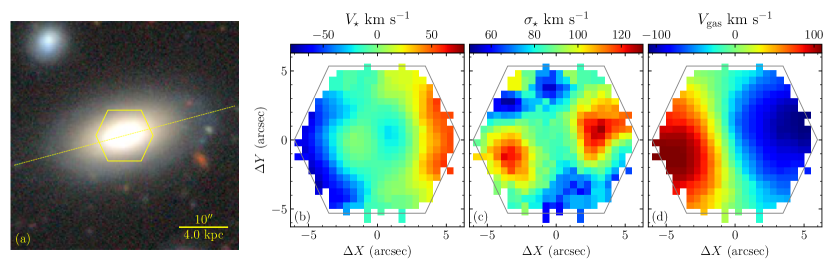
2 البيانات الرصدية
2.1 مطيافية المجال المتكامل MaNGA
يحتوي مسح MaNGA (Bundy et al., 2015) على أرصاد بوحدة مجال متكامل (IFU) (Drory et al., 2015) على تلسكوب Sloan ذي القطر 2.5 m (Gunn et al., 2006) لما يقرب من 10,000 مجرة في الكون القريب، تغطي مدى واسعاً من الكتل النجمية والألوان (Wake et al., 2017). رُصدت كل مجرة باستخدام ألياف قطرها 2″ مرتبة في حزم تراوح قطرها بين 12″(19 ألياف) و32″(127 ألياف)، مغطيّةً القطر الفعال للهدف. تغذي حزم الألياف مطيافات BOSS (Smee et al., 2013)، موفرةً تغطية طولية موجية مقدارها 3,600–10,300 Å مع قدرة فصل ، وهو ما يقابل تشتتاً آلياً قدره km s-1 عند 5100Å (Law et al., 2016). ولتحقيق تغطية كاملة، رُصدت كل مجرة بثلاث تعريضات مزاحة لملء الفجوات بين الألياف في الحزمة (Law et al., 2015; Yan et al., 2016).
فحصنا بيانات إصدار DR17 وحددنا 60 مجرات ذات قمتين منفصلتين خارج المركز في خرائط تشتت السرعة النجمية، مما يدل على وجود قرصين CR (Katkov I. et al. قيد الإعداد). وخلال عملية الفحص، استخدمنا بكثافة خدمة تفاعلية عبر الويب لتصور بيانات MaNGA (https://manga.voxastro.org22 2 https://manga.voxastro.org هو نموذجنا الأولي الأول لخدمة تصور بيانات IFU. https://ifu.voxastro.org (Katkov et al., 2021) هو الجيل التالي من الخدمة في مرحلة مبكرة من التطوير، ويتضمن بيانات من مسوح طيفية أخرى (SAMI, Califa, Atlas3D).)، وهي خدمة نطورها. تمتلك المجرة PGC 66551 (MaNGA ID 1-179561) أحد أفضل أمثلة أنظمة CR المحددة في عينتنا، ولذلك اختيرت لدراسة تفصيلية مستقلة.
تُظهر خريطة منتج تحليل بيانات MaNGA (DAP) لسرعة النجوم (الشكل 1b) بوضوح أن اتجاه الدوران النجمي ينعكس عند الانتقال من الجزء المركزي إلى المنطقة الخارجية للقرص. وتشكل القمتان خارج المركز في خريطة تشتت السرعة سمة واضحة أخرى للقرص النجمي CR (Krajnović et al., 2011) (الشكل 1c). ويعطي زاوي الموضع الحركي، المقدّر اعتماداً على خريطة سرعة H باستخدام شيفرة XookSuut (López-Cobá et al., 2021)، القيمة . في المقابل، يساوي زاوي الموضع الضوئي المشتق من صورة SDSS في نطاق باستخدام وحدة isophote من حزمة photutils33 3 https://photutils.readthedocs.io/ (Bradley et al., 2022) القيمة . ومع أخذ مجال رؤية MaNGA المحدود في الاعتبار، تبدو هذه التقديرات متوافقة ضمن . ويدعم تشابه قيم فكرة أن الغاز مستقر ويدور تقريباً في المستوى نفسه للقرص النجمي. ومع ذلك، لا يمكن مقارنة دوران القرص الغازي مباشرةً بدوران القرص النجمي، لأن الأخير مزيج من قرصين نجميين.
2.2 مطيافية SALT ذات الشق الطويل
لدراسة خصائص نجوم CR عبر قرص المجرة كله بدقة طيفية أعلى ولتجاوز قيود مجال رؤية MaNGA، أجرينا أرصاداً طيفية عميقة ذات شق طويل للمجرة PGC 66551. جُمعت الأرصاد باستخدام مطياف Robert Stobie Spectrograph (RSS; Burgh et al., 2003; Kobulnicky et al., 2003) على التلسكوب الجنوب إفريقي الكبير (SALT, Buckley et al., 2006; O’Donoghue et al., 2006) خلال الفترة مايو 19-31, 2020، حيث أُنجزت سبع توجيهات بتعريضات مقدار كل منها s، بمجموع تعريض علمي على الهدف قدره 4h40m. استخدمنا تهيئتين لمطياف RSS. خصصنا 4 ساعات من التعريض الكلي للحصول على طيف عميق للمتصل النجمي باستخدام محزوز PG2300 مع شق عرضه 1.25″، موفراً دقة طيفية في المجال الطيفي Å. واستُخدمت الدقائق المتبقية وعددها 40 لتتبع خطوط الإصدار بدقة أدنى مقدارها في المجال Å باستخدام محزوز PG1300 وشق عرضه 1″ عرضاً. وُجِّه الشق بمحاذاة المحور الإيزوفوتي الرئيسي للمجرة عند . أُنجز الاختزال الأولي والتمهيدي واختزال الشق الطويل للأطياف باستخدام الإجراء الموصوف في Kniazev (2022). كما صححنا الأطياف العلمية من الضوء المتشتت في الأداة باستخدام المقاربة المعروضة في Katkov et al. (2019). استُخدمت أطياف أقواس مرجعية لتتبع الدقة الآلية بوصفها دالة في الطول الموجي، وهي خطوة أساسية في النمذجة اللاحقة للأطياف. تمتلك الأطياف المختزلة لكلتا التهيئتين الطيفيتين مقياساً مكانياً قدره 0.25″ pixel-1، أما أخذ العينات الطيفي للتهيئتين عالية الدقة ومنخفضة الدقة فهو 0.32 Å pixel-1 و0.64 Å pixel-1 على الترتيب. وبدلالة تشتت السرعة الآلي، تبلغ الدقة الطيفية km s-1 عند 5300Å (موضع ميزة الامتصاص البارزة Mgb للتهيئة عالية الدقة، و48 km s-1 للتهيئة منخفضة الدقة عند 6700Å حول خط إصدار H.
3 التحليل
الهدف الرئيسي من تحليلنا الطيفي هو تحديد خصائص المجموعات النجمية في أقراص CR والغاز المتأين، وهي خصائص مهمة لفهم تطور تلك المجرة. وبوجه عام، اتبعنا سير عمل تحليلياً مشابهاً لما طُبق سابقاً في دراساتنا لمجرات CR وهي IC 719 (Katkov et al., 2013) وNGC 448 (Katkov et al., 2016).
3.1 الملاءمة الطيفية أحادية المكون
يحدد العمر والفلزية مظهر الطيف النجمي للمجرة. ويؤثر عمر المجموعة النجمية في عرض خطوط الامتصاص وقوتها، إذ تُظهر المجموعات الأصغر عمراً خطوط بالمر أقوى. أما الفلزية فتؤثر أساساً في عدد خطوط الامتصاص المعدنية وقوتها، إذ تُظهر المجموعات الأعلى فلزية سمات معدنية أكثر بروزاً. ولتحديد خصائص المجموعة النجمية، طبقنا حزمة الملاءمة الطيفية الكاملة NBursts (Chilingarian et al., 2007a, b)، التي تنمذج طيف المجرة بأكمله وتستخدم بفعالية المعلومات المشفرة فيه عن المجموعة النجمية. استخدمنا NBursts مع شبكة من نماذج المجموعات النجمية البسيطة (SSP) المبنية بشيفرة التخليق التطوري pegase-hr (Le Borgne et al., 2004) اعتماداً على المكتبة النجمية الرصدية Elodie 3.1 (Prugniel et al., 2007). وعند كل تقييم للنموذج أثناء حلقة تصغير ، يُستوفى طيف المجموعة النجمية من شبكة النموذج لقيم عمر وفلزية [Z/H]SSP معطاة. ثم يُوسَّع الطيف بتوزيع سرعات النجوم على خط النظر (LOSVD)، الموصوف في حالتنا بغوسي صرف، ويُضرب في متصل كثير حدود لمراعاة الفرق بين شكل طيف النموذج والطيف المرصود بسبب قصور معايرة الحساسية الطيفية وتأثيرات انطفاء الغبار. استخدمنا كثيرات حدود Legendre الضربية من الدرجتين 15 و20 لتهيئتي PG2300 وPG1300، على الترتيب. ويحتوي النموذج أيضاً على مجموعة من خطوط الإصدار القوية (H, H, [O iii], [O i], [N ii], H, [S ii]) ذات الحركيات الغوسية نفسها، لكنها مفصولة عن الحركيات النجمية. خطوط الإصدار مكونات جمعية تُحدد أوزانها، أي تدفقات خطوط الإصدار، كمسألة خطية تُحل في كل خطوة من حلقة تصغير غير خطية. وقد لُفَّت قوالب خطوط الإصدار وكذلك شبكة قوالب المجموعات النجمية مسبقاً بدقة آلية معتمدة على الطول الموجي قبل حلقة التصغير الرئيسية. تشبه هذه المقاربة، المتمثلة في ملاءمة المتصل النجمي وخطوط الإصدار في الوقت نفسه بحركيات مستقلة، شيفرة gandalf (Sarzi et al., 2017) أو الإصدارات الحديثة من شيفرة ppxf (Cappellari, 2017).
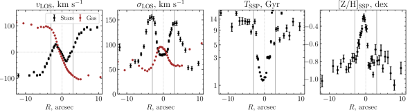
للحصول على ملفات معاملات محلولة مكانياً بقياسات موثوقة، طبقنا مخطط تجميع تكيفياً مباشراً على بيانات الشق الطويل. تضمن ذلك زيادة حجم الحاوية لتحقيق حد أدنى من نسبة الإشارة إلى الضجيج SNR=10 في المتصل عند Å في إطار السكون. وتُعرض الملامح الشعاعية المشتقة من تحليلنا أحادي المكون في الشكل 2. تُظهر الملامح الحركية بوضوح علامات نموذجية على وجود مكونين نجميين CR (Krajnović et al., 2011): ملف سرعة متموج، حيث تدور النجوم في المنطقة المركزية () في الاتجاه المعاكس بالنسبة إلى الجزء الخارجي () من المجرة، وملف تشتت سرعة ذي قمتين. وتقع القمتان في ملفات تشتت السرعة عند نصف قطر الانتقال ، حيث يتحول الدوران الداخلي، الذي يهيمن عليه مكون واحد، إلى الدوران الخارجي، وهو ما يقابل سعة سرعة صفرية عند تلك المسافة. وتُرصد الثنائية الواضحة نفسها في معاملات المجموعة النجمية. تهيمن على المنطقة المركزية مجموعة نجمية أصغر عمراً، عمرها المكافئ لـ SSP هو Gyr، بفلزية [Z/H] dex. أما المناطق الخارجية فتهيمن عليها مجموعة نجمية أقدم بكثير، عمرها Gyr، وهي فقيرة بالمعادن [Z/H] dex.
3.2 الغاز المتأين
تُظهر الأطياف البصرية للمجرة PGC 66551 خطوط إصدار قوية للغاز المتأين. وتدمج تقنية NBursts المستخدمة في هذه الدراسة مساهمات خطوط الإصدار ضمن النموذج وتوفر تقديرات لتدفقات الخطوط. وبما أن التوزيع المكاني لتدفقات خطوط الإصدار والمتصل النجمي ليسا متماثلين، طبقنا مخطط تجميع مختلفاً يعتمد على تدفق H+[O iii] الكلي لتحليل خطوط الإصدار. ويتيح لنا ذلك قياس الملف الشعاعي المحلول مكانياً لتدفقات خطوط الإصدار وحركياتها في مناطق تمتد إلى ما وراء القياسات النجمية في القسم 3.1.
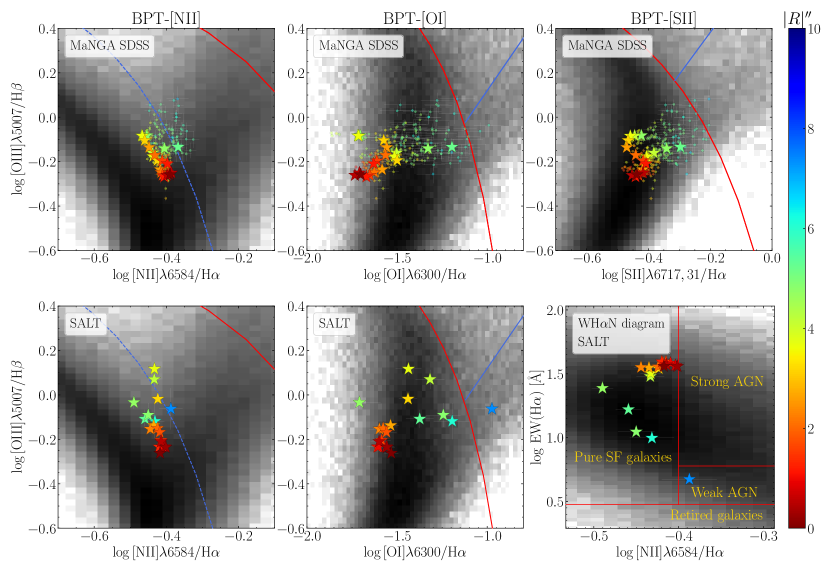
لتحديد آليات إثارة الغاز، استخدمنا كلاً من مخططات Baldwin-Phillips-Terlevich القياسية (BPT, Baldwin et al., 1981) مع خطوط الفصل التي وضعها Kewley et al. (2001) وKauffmann et al. (2003)، ومخطط مقابل [N ii]/H (WHAN) (Cid Fernandes et al., 2011) لكل من أطياف MaNGA وSALT (انظر الشكل 3). وتشير كلتا الطريقتين إلى أن آلية الإثارة المهيمنة هي التأين بواسطة النجوم الفتية، مع تغير طفيف باتجاه المناطق المركبة أو LINER مع زيادة المسافة عن مركز المجرة. وبما أنه لا تُرصد مصادر واضحة للصدمات، مثل حركات غازية غير منتظمة ناجمة عن قضيب أو تفاعل مدي، فقد يُعزى هذا السلوك إلى تزايد المساهمة النسبية في التأين من نجوم ما بعد فرع العمالقة المقارب (post-AGB) التابعة للمجموعة النجمية القديمة (Yan and Blanton, 2012; Singh et al., 2013).
تشير آلية الإثارة المهيمنة بواسطة النجوم الفتية بوضوح إلى تشكل نجوم جارٍ. صححنا تدفقات خطوط الإصدار باستخدام نقصان بالمر ومنحنى الانطفاء لـ Fitzpatrick (1999). وباستخدام تدفق الكلي المصحح من الانطفاء والمحصور ضمن مجال رؤية MaNGA الذي يغطي ، وعلاقة Kennicutt (1998)، قدرنا معدل تشكل النجوم الكلي (SFR) بأنه 0.89 M⊙ yr-1. وتتوافق هذه القيمة جيداً مع M⊙ yr-1 المشتقة من ملاءمة توزيع الطاقة الطيفية العريض النطاق (SED) والمقدمة في GALEX-SDSS-WISE Legacy Catalog (GSWLC, Salim et al., 2018).
قارنا تقديرات SFR هذه بالقيم المتوقعة لمجرة مكوّنة للنجوم تقع على التسلسل الرئيسي لتشكل النجوم (Brinchmann et al., 2004; Salim et al., 2007). القيمة المتوقعة لـ SFR في مجرة مكوّنة للنجوم ذات كتلة نجمية (يوصف قياس الكتلة في القسم 3.6)، هي 3 M⊙ yr-1 باستخدام علاقة Salim et al. (2007)، أو M⊙ yr-1 لأفضل ملاءمة للتسلسل الرئيسي المعتمد على الزمن من Speagle et al. (2014). وتشير هذه المقارنة إلى أن تشكل النجوم الحالي في PGC 66551 مخمود قليلاً وأن المجرة قد تحركت بالفعل إلى أسفل من التسلسل الرئيسي لتشكل النجوم (إن كانت عليه من قبل).
لمناقشة أصل المادة المتراكمة التي كوّنت القرص متعاكس الدوران، نحتاج إلى معرفة فلزية الطور الغازي.
ولتحديد فلزية الغاز المتأين، استخدمنا معايرتي O3N2 وN2 من Pettini and Pagel (2004).
وجدنا أن فلزية الغاز على امتداد الشق وفي كامل مجال رؤية MaNGA لا تُظهر أي تباين ضمن الارتياب النموذجي البالغ 0.1 dex للمعايرات المستخدمة.
ومتوسطا قيم 44
4
ضمن مجال أنصاف الأقطار من -8″ إلى 5″ حيث تمتلك قياسات جميع خطوط الإصدار نسبة إشارة إلى ضجيج عالية. لكل من معايرتي O3N2 وN2 هما dex55
5
الأخطاء هنا هي RMS للقياسات. و dex، على الترتيب.
وبافتراض أن الفلزية الشمسية تساوي 8.69 dex (Asplund et al., 2009)، فإن تقديراتنا توافق فلزية للطور الغازي المتأين دون شمسية قليلاً، في المجال بين dex و dex.
طبقنا أيضاً تقنية IZI (Blanc et al., 2015) ووجدنا أن التقديرات المعتمدة على جميع شبكات نماذج التأين الضوئي، باستثناء d13_kappa20 وd13_kappaINF (Dopita et al., 2013)، تتفق مع معايرتي O3N2 وN2.
تحققنا أيضاً مما إذا كانت PGC 66551 تقع على علاقة الكتلة-الفلزية للمجرات المكونة للنجوم. تنتج المعايرات المختلفة للفلزية أشكالاً ومواضع مختلفة اختلافاً ملحوظاً لعلاقة الكتلة-الفلزية، تتفاوت بما يقرب من 1 dex (Kewley and Ellison, 2008). ولإجراء مقارنة صالحة، تحققنا من علاقة الكتلة-الفلزية المشتقة للمعايرات نفسها. بالنسبة إلى كتلة مجرية مقدارها ومعايرتي O3N2 وN2، نتوقع قيمة مقدارها 8.76 و8.72 dex، على الترتيب. هذه القيم أعلى بمقدار 0.22-0.25 dex من فلزية المجرة، وأعلى بكثير من RMS للعلاقة نفسها، وهو 0.1 dex (Kewley and Ellison, 2008).
3.3 توزيع LOSVD النجمي اللامعلمي
لكشف الحركيات ثنائية المكون للمجموعة النجمية في PGC 66551، طبقنا مقاربة استرجاع LOSVD اللامعلمية، التي استخدمناها بنجاح في دراساتنا السابقة (مثلاً، Katkov et al., 2011, 2013, 2016; Kasparova et al., 2020). يمكن نمذجة طيف مجرة مُحَوَّط لوغاريتمياً في الطول الموجي بوصفه التفاف قالب طيفي عالي الدقة للمجموعة النجمية مع LOSVD النجمي. في مقاربتنا، نتعامل مع مسألة فك الالتفاف بوصفها مسألة خطية سيئة الوضع يكون حلها هو LOSVD المطلوب. ونحل المسألة بطريقة المربعات الصغرى الخطية مع حد انتظام يفرض حلاً سلساً لـ LOSVD ويصغّر القمم الاصطناعية البعيدة عن السرعة النظامية، أي انتظام “الذيل”. استخدمنا كقالب نموذج أفضل ملاءمة غير موسع من ملاءمة NBursts أحادية المكون (القسم 3.1). واستخدمنا هنا أيضاً أحدث تعديل لطريقتنا، الذي يطبق مقاربة تكرارية (Gasymov and Katkov, 2021). وبدلاً من إيجاد حل LOSVD الكامل، نعيد صياغة المسألة للبحث عن التصحيحات المطلوبة فوق المقاربة الابتدائية لملف LOSVD. في التكرار الأول، نستخدم شكل LOSVD الغوسي من الملاءمة أحادية المكون. وفي التكرارات اللاحقة، نستخدم الحل الكامل من الخطوة السابقة. في هذه المقاربة، يعمل الانتظام على متجه التصحيح لا على حل LOSVD الكامل، مما يتطلب أن تكون التصحيحات ملساء.
تُعرض ملفات LOSVD النجمية الناتجة، المعاد بناؤها في جميع الحاويات المكانية على امتداد الشق، في اللوحة العليا من الشكل 4 كمخطط موضع-سرعة، وتُظهر بوضوح وجود مكونين متمايزين حركياً في المجموعة النجمية: يهيمن الداخلي منهما في الجزء المركزي ويدور مع الغاز المتأين، في حين يدور المكون النجمي الرئيسي عكس الغاز ويمتد إلى أطراف المجرة. وقد أتحنا شيفرة طريقتنا علناً على هيئة حزمة Python sla66 6 https://pypi.org/project/sla/, https://github.com/gasymovdf/sla. لاحظ أن مقاربة مشابهة لكنها بايزية لاسترجاع LOSVD النجمي اللامعلمي، وهي bayes-losvd التي قدمها Falcón-Barroso and Martig (2021)، متاحة أيضاً.
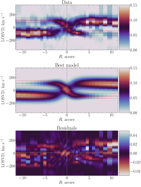
لتقدير مساهمة المكون النجمي CR الثانوي في الضوء النجمي المتكامل، قمنا بملاءمة LOSVD المعاد بناؤه. افترضنا أنه عند أي موضع معطى ، يوصف LOSVD بغوسيين تكون معاملات كل منهما، أي sigma والتدفق والسرعة ، دوالاً في . استخدمنا لقيمتي التدفق وsigma قوانين تناقص أسي ، ، بينما اعتمدنا لملف السرعة المعلمة الآتية: . يُعرض نموذج LOSVD الأفضل ملاءمة وبواقيه في اللوحتين الوسطى والسفلى من الشكل 4. ويقترح هذا النموذج أن قرصاً نجمياً ثانوياً متعاكس الدوران يساهم بمقدار في الضوء المتكامل لمجرة PGC 66551.
أحد قيود مقاربة إعادة بناء LOSVD لدينا هو أننا نستخدم قالباً نجمياً واحداً فقط لإعادة بناء الشكل المعقد لـ LOSVD المتكون من قرصين نجميين. ويُفترض أن المكونين النجميين يمتلكان خصائص مجموعة نجمية متقاربة وأن القالب النجمي نفسه يمثلهما بصورة موثوقة. وإذا كان هذا الافتراض غير صحيح، فقد يؤدي ذلك إلى تشويه LOSVD المسترجع.
3.4 التفكيك الطيفي ثنائي المكون
لتجاوز المشكلة المذكورة أعلاه، وهي استخدام قالب مجموعة نجمية متماثل، وللحصول على خصائص المجموعة النجمية لكل من المكونين المتمايزين حركياً، أجرينا ملاءمة معلمية ثنائية المكون، تُعرف أيضاً بالتفكيك الطيفي (Coccato et al., 2011). في هذه الطريقة، يُنمذج الطيف المرصود بمجموعتين نجميتين، موسعتين بتوزيعي LOSVD فرديين ومستقلين. وقد طبقنا سابقاً هذه المقاربة اعتماداً على تقنية ملاءمة البكسل الكامل NBursts عند دراسة ظواهر الدوران النجمي المعاكس في IC 719 (Katkov et al., 2013)، وNGC 524 (Katkov et al., 2011)، وNGC 448 (Katkov et al., 2016). وخلافاً لتلك الدراسات، حيث كنا نحجب خطوط الإصدار، أدرجنا هنا مجموعة من قوالب خطوط الإصدار في النموذج. ويُعرض تفكيك أطياف المنطقة في الشكل 5.
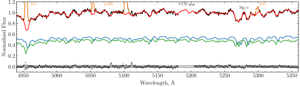
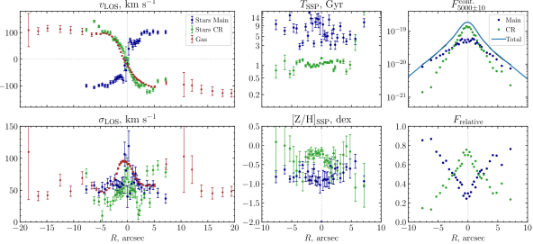
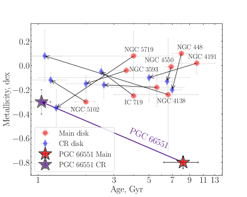
تُعرض الملفات الشعاعية للمعاملات المسترجعة في الشكل 6. وهي أقل امتداداً مقارنةً بالتحليل أحادي المكون لأننا في هذه الحالة طبقنا شرطاً أشد لنسبة الإشارة إلى الضجيج مقداره 15 خلال مرحلة التجميع التكيفي. وتُظهر اختلافات واضحة في سرعة خط النظر والعمر والفلزية. تُظهر الأقراص النجمية الرئيسية ومتعاكسة الدوران، وكذلك مكون الغاز المتأين، سعة دوران متشابهة مقدارها km s-1 (غير مصححة لميل القرص). غير أن القرص الرئيسي يدور عكس الغاز، بينما يدور المكون الثانوي معه. وتبين نتائج التفكيك الطيفي بوضوح أن القرص النجمي متعاكس الدوران يهيمن على الضوء المتكامل في 3″المركزية (انظر العمود الأيمن في الشكل 6). كما يدعم الملف الشعاعي للحركيات النجمية افتراضنا بأن كلا المكونين يمتلكان مورفولوجيا قرصية. يمتلك القرصان مساهمتين متقاربتين في الضوء المتكامل عند أنصاف الأقطار حيث كُشفت قمتا في ملفات الملاءمة أحادية المكون (انظر الشكل 2). القرص الرئيسي أقدم بكثير، Gyr، مقارنةً بالقرص متعاكس الدوران ذي العمر Gyr، مما يدل على أن نجومه تشكلت في وقت متأخر كثيراً. وأخيراً، يوفر توزيع الفلزية تمييزاً واضحاً بين القرصين. وخلافاً لمعظم المجرات المدروسة تفصيلاً بطريقة التفكيك الطيفي (انظر الشكل 7)، تُظهر المجموعة النجمية للقرص النجمي الرئيسي في PGC 66551 فلزية أدنى بكثير، [Z/H] dex، مقارنةً بالقرص متعاكس الدوران الذي يمتلك فلزية دون شمسية قليلاً. وباستخدام الأوزان النسبية المستحصلة من التفكيك الطيفي، قدرنا أن مساهمة مكون CR في الضوء المتكامل تبلغ نحو 50%، وقدرت مساهمته في الكتلة النجمية بنحو ، اعتماداً على نسب الكتلة إلى الضوء المشتقة من معاملات المجموعة النجمية (انظر الجدول 1).
3.5 الملاءمة الطيفية-الضوئية
في هذا القسم، نقترح مقاربة أكثر تعقيداً وتقدماً لاستقصاء PGC 66551 عبر نمذجة متزامنة لكل من الأطياف والقياس الضوئي عريض النطاق، بهدف التغلب على انحلال العمر-الفلزية وتأكيد الفلزية المنخفضة للقرص الرئيسي، وكذلك إنتاج نموذج مجموعة نجمية ذاتي الاتساق مطلوب لتحليل التطور الكيميائي في القسم 4.
تؤدي زيادة عمر المجموعة النجمية وفلزيتها إلى احمرار SED، ويكون هذا التأثير قوياً بصفة خاصة في المرشحات فوق البنفسجية والزرقاء (Conroy, 2013). جمعنا SED المحلول مكانياً، بما في ذلك النطاقان فوق البنفسجيان FUV وNUV من Galaxy Evolution Explorer (GALEX) والمستخرجان من أرشيف MAST77 7 https://mast.stsci.edu/portal/Mashup/Clients/Mast/Portal.html، وصور البصرية من مسح SDSS88 8 https://skyserver.sdss.org (تُجنبت صورة نطاق لأنها عادة خافتة)، وصور من Legacy Survey (Dey et al., 2019) المستخرجة من خدمة القصاصات99 9 https://www.legacysurvey.org/viewer، وصورة نطاق من CFHT المستخرجة من CADC1010 10 https://www.cadc-ccda.hia-iha.nrc-cnrc.gc.ca، وصور من The VISTA Hemisphere Survey (VHS) المسترجعة عبر ESO Archive Science Portal1111 11 http://archive.eso.org/scienceportal/. قدّرنا مستوى خلفية السماء وطرحناه بتطبيق تقنية قص 1212 12 استخدمنا الدالة sigma_clipped_stats() من حزمة astropy.stats https://docs.astropy.org/en/stable/stats/. استخدمنا ملفات سطوع سطحي متوسط أزيموثياً بُنيت باستخدام وحدة isophote من حزمة photutils التابعة لـ Astropy.
استخدمنا نمط spec+phot في NBursts (Chilingarian and Katkov, 2012; Grishin et al., 2021; Katkov et al., 2022) لنمذجة الأطياف البصرية وSED عريض النطاق في وقت واحد في حاويتين مكانيتين ″ حيث تكون مساهمتا القرصين متقاربتين. حاولنا في البداية استخدام مزيج من نموذجي SSP، كما في القسم 3.4. ولكن بسبب تاريخ تشكل النجوم المعقد (SFH) وتشكل النجوم الجاري في مجرة PGC 66551، لم يتمكن أي مزيج من نموذجي SSP من وصف الجزء فوق البنفسجي من SED عريض النطاق. ثم طبقنا نماذج مجموعات نجمية ذات تاريخ تشكل نجوم متناقص أُسّياً (وتسمى فيما يلي نماذج exp-SFH) تُعرّف بعصر بدء تشكل النجوم ، ومقياس التناقص الأسي ، والفلزية النجمية المتوسطة. استخدمنا وناقشنا المجموعة نفسها من نماذج المجموعات النجمية لتحليل خصائص المجموعات النجمية في مجرات فهرس RCSED (Chilingarian et al., 2017).
بُنيت شبكة طيفية لنماذج exp-SFH، مشابهة لشبكة SSP، باستخدام شيفرة pegase-hr (Le Borgne et al., 2004) فوق المكتبة النجمية الرصدية Elodie3.1 (Prugniel et al., 2007) باستخدام IMF لـ Kroupa (2001). وحُسبت النماذج الضوئية بشيفرة PEGASE.2 (Fioc and Rocca-Volmerange, 1997) باستخدام مكتبة BaSeL النجمية التركيبية منخفضة الدقة (Lejeune et al., 1997). أثناء التصغير في نمط NBursts+phot، تكون قيمة الكلية مساوية لمجموع المساهمتين الطيفية والضوئية: ، حيث استخدمنا أوزاناً متساوية للمساهمتين .
مع أن الانطفاء معامل حاسم في نمذجة spec+phot، فإنه معامل external في حزمة NBursts، أي إنه لا يُلائم بل يُثبّت عند قيمة محددة مسبقاً. أجرينا الملاءمة لقيم في المجال من 0.0 إلى 1.5 بخطوة مقدارها 0.05، ووجدنا أن أفضل قيم لكلتا الحاويتين المكانيتين تقابل mag. وبفضل خطوط الإصدار القوية في الحاويات المكانية المحللة، قدرنا الانطفاء بأنه mag من نقصان بالمر ، وهو ما يتفق بصورة لافتة مع القيمة المشتقة من الملاءمة الطيفية-الضوئية.
كان بالإمكان وضع قيد آخر على معاملات النموذج من تقدير SFR الحالي، الذي يمكن إعادة حسابه إلى قيمة لأي عصر تشكل معطى لقرص CR، . لا يستطيع الإصدار الرئيسي من NBursts إلا تصغير شبكات نماذج مجموعات نجمية ذات معاملين. لذلك، ثبتنا عصر البدء للقرص الرئيسي عند Gyr، وأجرينا بحثاً شبكياً على جميع العقد لعصر مكون CR. كشف تحليل الحاويتين المكانيتين أن القيمة المثلى لعصر تشكل قرص CR هي Gyr. أما المعاملات الحرة تماماً المتبقية في إجراء الملاءمة فكانت فلزيتي المكونين، ومقياس التناقص الأسي للقرص الرئيسي ، والمعاملات الحركية، التي لا نناقشها هنا، لكنها متسقة عموماً مع تحليل SSP. تُعطى المعاملات النهائية للملاءمة في الحاويتين المكانيتين في الجدول 1. ويعرض الشكل 8 النموذج الأفضل ملاءمة ومكونات النموذج للحاوية ″.
يحافظ التحليل المقترح، الأكثر تعقيداً وشمولاً بكثير، على استنتاجنا بأن المكون الرئيسي في PGC 66551 يمتلك بالفعل مجموعة نجمية فقيرة بالمعادن. ومقارنةً بتحليل SSP ([Z/H] dex)، فإن الفلزية [Z/H] dex ليست منخفضة إلى هذا الحد الشديد، لكنها تبقى أدنى بكثير من فلزية قرص CR البالغة dex في PGC 66551، وأدنى بقوة من فلزية المكونات الرئيسية في مجرات CR الأخرى المدروسة (انظر الشكل 7).
كذلك نوضح في الشكل 9 كيف تكسر الملاءمة الطيفية-الضوئية انحلال العمر-الفلزية. نرسم شريحة من فضاء على مستوى معاملات القرص النجمي الرئيسي [، [Z/H]expSFH] لعدة صيغ ملاءمة: i) حيث تُحلل المعلومات الطيفية فقط ()، وii) نموذجنا الرئيسي حيث تُستخدم البيانات الطيفية والضوئية ()، وiii) ملاءمة بيانات ضوئية صرفة (). إن الشكل الأقل استطالة والأكثر دائرية لمنحنيات و حول الحد الأدنى في خريطة يشير بوضوح إلى درجة أقل من الانحلال بين المعامل المرتبط بالعمر والفلزية.
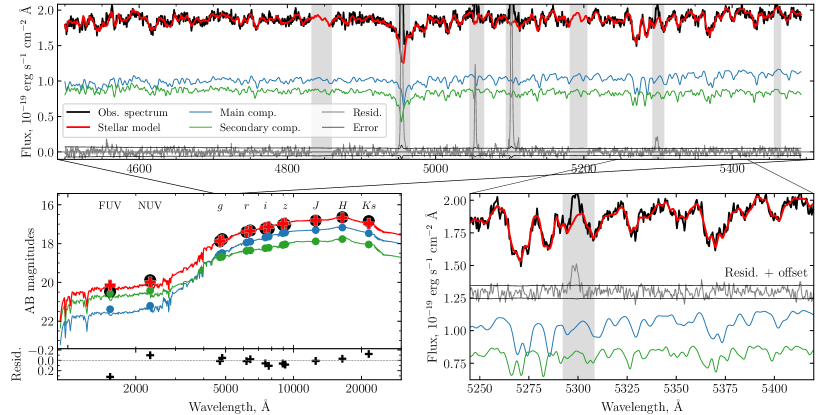
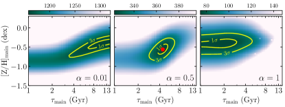
| Parameter | Main disk | CR disk |
|---|---|---|
| Bin | ||
| , mag | 0.65 (grid) | |
| , Gyr | 13 (fixed) | 2 (grid) |
| , Gyr | (fixed) | |
| [Z/H], dex | ||
| Bin | ||
| , mag | 0.65 (grid) | |
| , Gyr | 13 (fixed) | 2 (grid) |
| , Gyr | (fixed) | |
| [Z/H], dex | ||
| Rotation curve decomposition | ||
| , Gyr | ||
| [Z/H], dex | -0.55 | -0.20 |
| , M⊙/L⊙ | ||
| -SDSS, mag | ||
| , kpc | ||
| , M⊙/pc2 | ||
| , | ||
| , | ||
| , | ||
| , | ||
Note. — يتضمن قسم تفكيك منحنى الدوران معاملات المجموعات النجمية المعتمدة ( و[Z/H]RC) المستخدمة لحساب ، الذي يُفحص لاحقاً من أجل تفكيك RC.
3.6 تفكيك منحنى الدوران
يُظهر طيف SALT ذي الشق الطويل على امتداد المحور الرئيسي أن خطوط الإصدار تتتبع دوران المجرة حتى kpc، حيث يكون قد بلغ بالفعل هضبة. استخدمنا منحنى الدوران الممتد هذا لتقدير الكتلة الديناميكية الكلية للمجرة وجزء هالة المادة المظلمة. أولاً، صححنا قياس سرعة خط النظر المحدد لتأثير الميل باعتماد الزاوية من تحليل الإيزوفوت لصورة SDSS في نطاق ، الذي أُجري بواسطة وحدة isophote من حزمة photutils التابعة لـ Astropy1313 13 https://photutils.readthedocs.io/ (Bradley et al., 2022). وبما أن تفكيك منحنى الدوران ملتبس (انظر مثلاً Saburova et al., 2016)، مما يؤدي إلى انحلال قوي بين المعاملات، فقد خفضنا عدد معاملات النموذج الحرة لتثبيت الحل. فككنا منحنى الدوران إلى قرصين نجميين (رئيسي ومتعاكس الدوران) وهالة مادة مظلمة. ولجعل هذا التحليل متسقاً مع تحليل المجموعة النجمية، طبقنا الأوزان النسبية المشتقة من التفكيك الطيفي (انظر القسم 3.4) على ملف السطوع السطحي الشعاعي في نطاق لحساب ملفات فردية لكل من القرصين. وُجد أن الملفات مشابهة لملفات أسية، ولذلك لاءمناها بأسّيات واستخدمنا معاملاتها لتبسيط حساب مساهمتها في منحنى الدوران. ولتحويل ملفات الضوء إلى ملفات كتلة، استكشفنا نسب الكتلة إلى اللمعان () المنقحة لمعاملات المجموعات النجمية المعتمدة ، [Z/H]RC من التحليل الطيفي-الضوئي (انظر المعاملات في الجدول 1). وأعطى ذلك أيضاً كتلة كلية مقدارها تتكون من و . وبهذه الطريقة، ثُبتت مساهمة الأقراص النجمية كلياً. حاولنا إضافة مكون انتفاخ إلى النموذج، لكن الجزء المركزي من منحنى الدوران كان موصوفاً جيداً بالفعل ولم تكن هناك مساحة لمكون إضافي. بقيت معاملات هالة المادة المظلمة حرة. وبصورة مشابهة لـ Saburova et al. (2016)، نظرنا في ثلاثة أنواع من ملفات كثافة DM: ملف Navarro-Frenk-White (NFW) (Navarro et al., 1996)، وملف الكثافة لـ Burkert (1995)، والملف شبه متساوي الحرارة (ويشار إليه فيما يلي بـ piso). تُعلَّم الملفات الثلاثة بالكثافة المركزية والمقياس الشعاعي للهالة . وللتيسير، أعدنا صياغة الملفات بالمعاملين و، حيث إن سرعة هالة عظمى عند نصف القطر . يوضح مثال خريطة لهالة NFW في إحداثيات (, ) في الشكل 10 وجود انحلال واضح حتى بين و. وفي التبسيط الأخير، قيّدنا ليكون مساوياً لقيمة هضبة منحنى الدوران البالغة 250 km s-1، مع بقاء معامل نموذج واحد فقط هو . وقدمت ملفات الهالة المختلفة تقديرات كتلة متشابهة: ، و ، و .
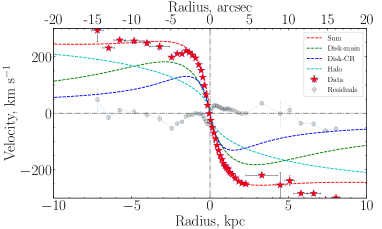
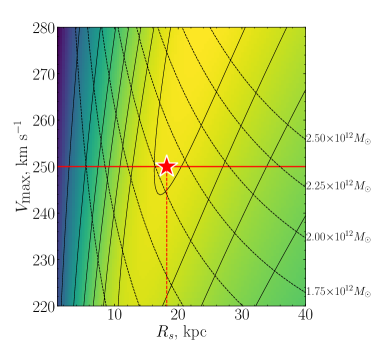
وجدنا أن تقديرات كتلة الهالة هذه تتفق تماماً مع المعايرة التجريبية (Marasco et al., 2021) المبنية على عينة مجرات SPARC (Lelli et al., 2016) وتفكيك منحنى الدوران لدى Posti et al. (2019). تتنبأ هذه العلاقة بـ لهضبة سرعة مقدارها 250 km s-1. وبدمج والكتلة النجمية (من GSWLC ومن تقديراتنا)، حصلنا على الكسر النجمي ، حيث إن هو كسر الباريونات1414 14 كما في الكوسمولوجيا المعتمدة في ورقة Posti et al. (2019).، في مجال . وعموماً، تقع هذه القيمة ضمن سحابة مجرات SPARC على مخطط من Posti et al. (2019) (الشكل 2)، وهي أدنى بوضوح من التنبؤ المستند إلى دراسة المطابقة الوفيرية لـ Moster et al. (2013) (الشريط الرمادي في الشكل نفسه 2). وتشير هذه المقارنة بالنسبة إلى PGC 66551 إلى أنه، على الرغم من خصوصياتها الحركية وطريقتها غير المعتادة جداً في بناء قرصها النجمي، فإن النسبة بين المكونات النجمية وهالة المادة المظلمة ليست شاذة بدرجة كبيرة.
4 نموذج التطور الكيميائي
4.1 الإطار
في هذا القسم، نبني إطاراً لنمذجة تاريخ الإثراء الكيميائي، يمكنه تفسير خصائص المجموعة النجمية لأقراص CR والغاز المتأين في PGC 66551. وبما أننا لم نجد تدرجات مهمة في خصائص المجموعة النجمية وفلزية الغاز، يمكننا اعتبار الإثراء الكيميائي عملية كلية، مع افتراض المجرة بأكملها منطقة واحدة ممزوجة جيداً ذات تاريخ تشكل نجوم وفلزية موحدين. استفدنا من تقريب إعادة التدوير الآنية (IRA, Schmidt, 1963; Pagel and Patchett, 1975; Tinsley, 1980)، الذي يفترض أن النجوم ذات لها أعمار لا نهائية، بينما تموت النجوم الضخمة ذات فور تشكلها، فتثري ISM بالمعادن المنتجة حديثاً، التي تمتزج مباشرة في الطور الغازي وتُعاد تدويرها فوراً في أجيال جديدة من النجوم. بنينا نموذج IRA للتطور الكيميائي متبعين الوصف التفصيلي لدى Spitoni et al. (2017) وChilingarian and Asa’d (2018). يتضمن النموذج عادة المكونات الآتية: SFH ، ودالة الكتلة الابتدائية (IMF)، والكتلة الكلية لخزان الغاز، ومعدلات السقوط والخروج . ولتسهيل صياغة المعادلات، تُعرّف المعاملات الآتية: ، وهو ما يسمى كسر الكتلة المعادة من الغاز الذي يعود إلى ISM ويمكن إعادة تدويره لتشكل النجوم، و، وهو المردود لكل جيل نجمي، أي كسر الكتلة في العناصر الثقيلة التي تخلقها النجوم وتعيدها إلى ISM عبر الرياح النجمية وانفجارات المستعرات العظمى. يعتمد كل من و على IMF وبدرجة أقل بكثير على الفلزية (Vincenzo et al., 2016). اعتمدنا القيم الآتية من Spitoni et al. (2017) و من أجل دوال IMF لـ Kroupa (2001) وChabrier (2003).
لحساب تطور فلزية ISM، ، يمكننا تعريف مجموعة من المعادلات. في نموذج الصندوق المغلق، تنخفض الكتلة الكلية للمعادن في ISM عندما تُحتجز بعض المعادن في النجوم ، بينما تزداد بسبب الإثراء الناتج من تطور النجوم الضخمة . يمكن التعبير عن توازن كتلة العناصر الثقيلة على النحو . عرّفنا مجموعة معادلات لتطور كتلة المجرة ، وكتلة الغاز ، والفلزية، مع أخذ حدود السقوط ، والخروج ، و في الاعتبار، كما يأتي:
| (1) |
حيث إن و هما فلزيتا الغاز الساقط والخارج، على الترتيب. وبدمج المعادلات أعلاه نحصل على
| (2) |
استخدمنا نموذجاً بسيطاً يكون فيه معدل الخروج متناسباً مع SFR، (Matteucci and Chiosi, 1983; Matteucci, 2012). ويمثل معامل تحميل الكتلة الكفاءة التي يُطرد بها الغاز من المجرة بواسطة الرياح المجرية. واقتداءً بـ Dalcanton (2007)، نعتبر فلزية الغاز الخارج كما يأتي: . تأتي مادة الخروج كلها من ISM في حالة كسر الجرف . وتعني أن الخروج تهيمن عليه مقذوفات المستعرات العظمى. فلزية مقذوفات المستعرات العظمى هي ، حيث من أجل IMF لـ Kroupa (2001) (Dalcanton, 2007). واعتمدنا في حساباتنا . أما لمعدل السقوط فاستخدمنا الصياغة الأسية الأكثر شيوعاً (Matteucci, 2012). طبقنا طريقة Runge-Kutta من الرتبة الرابعة على المعادلة 2 مع الشروط الابتدائية [Z/H](0)=-3 (Bromm and Yoshida, 2011)، ، . وعلى الرغم من بساطة هذه المقاربة للتطور الكيميائي، فإنها تتيح الحصول على الخصائص الفيزيائية للمجرات في مراحل مختلفة من عمرها، ونمذجة واسترجاع تواريخ تشكل النجوم الخاصة بها من الأطياف (Grishin et al., 2019)، فضلاً عن معلومات إضافية عن السقوط والرياح المجرية (Chilingarian and Asa’d, 2018; Grishin et al., 2021).
4.2 التطبيق على PGC 66551
بعد أن عرّفنا إطار الإثراء الكيميائي، يمكننا تكييفه مع سياق المجرة المدروسة. نهدف إلى تقييد خصائص الريح المجرية الخارجة وفلزية الغاز الهابط عبر إعادة إنتاج المرصودات في PGC 66551. ننظر في خيارين لبناء النموذج: 1) إعادة إنتاج خصائص القرص الرئيسي أولاً ثم قرص CR، و2) إعادة إنتاج قرص CR أولاً ثم القرص الرئيسي.
وباستخدام مقاييس exp-SFH، و، من التحليل الطيفي-الضوئي (انظر القسم 3.5) وتقديرات الكتلة النجمية للأقراص، يمكننا تقييد تواريخ تشكل النجوم الخاصة بها بالكامل، و. افترضنا أن القرص النجمي الرئيسي تشكل من خزان باريوني بدائي أولي كتلته . بدأ التشكل قبل 13 Gyr، وسار وفق exp-SFH بمقدار Gyr، وأسفر عن قرص كتلته النجمية .
إن حقيقة أن المادة المتراكمة خارجياً كوّنت قرص CR واسع النطاق تعني أن المجرة المضيفة لم تكن تحتوي كمية كبيرة من الغاز عند العصر Gyr مضت عندما بدأ التراكم. وإلا لتصادمت السحب الغازية وفقدت زخماً زاوياً وسقطت نحو مركز المجرة من دون أن تكوّن قرص CR.
بدأ تشكل قرص CR قبل Gyr مع تراكم غاز بمعدل أسي وفلزية . ومن التحليل الطيفي-الضوئي، يلزم SFH أسي بمقياس Gyr لكي يكون تشكل النجوم الحالي عند المستوى المقدّر 0.93 M⊙ yr-1. في البداية (عند اللحظة )، يكون SFR الخاص بـ CR في أعلى قيمة له 10 M⊙ yr-1 ولا يوجد غاز؛ لذلك، ومن أجل وضع ذي معنى فيزيائي، من الضروري ضمان محتوى غازي كاف. ولذلك أخّرنا بدء تشكل النجوم من لحظة البداية حتى 50 Myr بعد بدء سقوط الغاز. ولا يكون لتغيير هذا الإزاحة الزمنية تأثير مهم في نتائج النمذجة. وفي نموذجنا الأساسي، اعتمدنا أن المقياس الأسي للسقوط يساوي مقياس exp-SFH، . أتاح لنا تثبيت حساب تطبيع معلمة السقوط الأسية باستخدام شرط أن تكون الكتلة المتبقية من الغاز مساوية لكتلة الهيدروجين الذري من مسح Hi-MaNGA (Masters et al., 2019). وهنا افترضنا أن النجوم المتراكمة خارجياً تشكل كسراً غير مهم.
يرث جيل النجوم المتشكل في أي زمن معين فلزية ISM، . ولأي نموذج CEH معطى لـ ISM، يمكن استخدام مزيج من ونسب الكتلة إلى الضوء من شبكة نماذج المجموعات النجمية لحساب الفلزية المتوسطة الموزونة باللمعان لكل مكون قرصي. وباشتراط أن تساوي هذه القيم ما وُجد من الملاءمة الطيفية-الضوئية، [Z/H] dex و[Z/H] dex، يمكننا الحصول على قيود على معاملات الريح المجرية وفلزية الغاز الهابط الذي كوّن قرص CR. وعند قيمة معطاة، قد يرغب المرء، لإعادة إنتاج الفلزية المنخفضة للمكون الرئيسي، في ريح مجرية غنية بالمعادن ( منخفضة)، لكن الفلزية الأعلى لقرص CR تتطلب حفظ المعادن بدلاً من طردها ( أعلى). لذلك، تحدد خصائص القرصين حدود كسر الجرف في الريح المجرية من أجل معامل تحميل كتلة معطى .
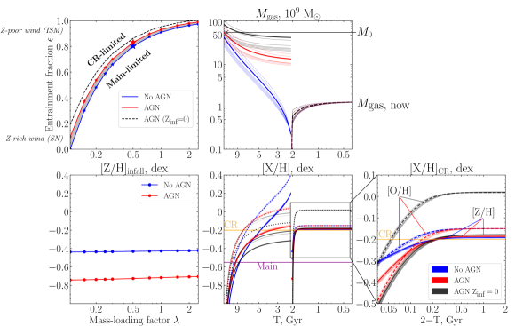
افترضنا أن عملية الخروج متماثلة من حيث و أثناء تشكل كلا القرصين. كررنا الحسابات أدناه لكل قيمة من المجموعة 0.1، 0.15، 0.2، 0.25، 0.3، 0.5، 0.75، 1.0، 1.5، 2.0، 2.5. أولاً، ركزنا على خصائص القرص الرئيسي. هو المعامل الحر الوحيد الذي يمكننا تغييره لإعادة إنتاج [Z/H] dex. وتتحكم الفلزية المنخفضة للقرص الرئيسي في الحد السفلي في مخطط المعروض بالخط الأزرق المتصل في الشكل 11 (اللوحة العليا اليسرى). ثم استُخدمت قيمة المحددة لتاريخ إثراء قرص CR، حيث غيّرنا فلزية الغاز الساقط لإعادة إنتاج [Z/H] dex (الخط الأزرق المتصل في اللوحة السفلى اليسرى من الشكل 11).
بعد ذلك بنينا نموذجاً للإثراء المعدني يركز على خصائص قرص CR. في الخطوة الأولى، درسنا صيغة تراكم غاز بدائي نقي، مفترضين (Bromm and Yoshida, 2011). وعبر إعادة إنتاج الفلزية النجمية لقرص CR، نحصل على ، وهي القيمة العظمى الممكنة. في جميع سيناريوهات سقوط الغاز المُثرى مسبقاً الأخرى، ستكون أقل، أي إن ريحاً أغنى بالمعادن مطلوبة للحصول على الفلزية النجمية المرصودة. ويحدد هذا الحد العلوي المبين بالخط الأسود المتقطع في مخطط . في حالة الريح غير الفعالة هذه ( أعلى)، ومن أجل اشتقاق الفلزية المنخفضة للقرص الرئيسي، يتعين علينا زيادة الخزان الابتدائي من الغاز الفقير بالمعادن. وينتج عن ذلك غاز متبق عند الزمن الرجوعي Gyr يحتاج إلى أن يُطرد قبل التراكم الضخم للغاز الذي يشكل قرص CR. وقد حددت دراسة Starkenburg et al. (2019) لمحاكاة Illustris قناتين مسؤولتين عن حلقة كبيرة من إزالة الغاز: انفجار شديد من تغذية AGN الراجعة وتجريد غازي يحدث أثناء مرور قريب عبر بيئة مجموعة ضخمة. ومن الاحتمالات الأخرى، كما وصفه Khoperskov et al. (2021) واستناداً أيضاً إلى محاكاة كونية (IllustrisTNG)، إزالة الغاز عبر التقاط الغاز الموجود مسبقاً ومزجه مع السقوط. غير أن هذا السيناريو يعني أن كتلة الغاز الساقط تتجاوز كثيراً الكتلة الموجودة مسبقاً. فيما يلي، سننسب حلقة فقدان الغاز إلى AGN، مع الإشارة إلى أن ذلك قد يمثل أي عملية فيزيائية تؤدي إلى طرد فعال للغاز المتبقي بحلول وقت تشكل قرص CR.
وفرة الأكسجين في الغاز المتأين [O/H] = dex كمية مرصودة أخرى متاحة لنا. ولاستخدامها، أضفنا حساب تاريخ إثراء الأكسجين إلى النموذج بحل معادلة مطابقة للمعادلة 2، مع افتراض مردود الأكسجين (Spitoni et al., 2017) بدلاً من . وجدنا أنه في السيناريو الأخير، بدت وفرة الأكسجين أعلى بكثير من القيمة المقاسة في المجرة1515 15 افترضنا هنا صفراً لإثراء الأكسجين في الغاز الساقط . وأي غاز أكثر إثراءً بالأكسجين سيؤدي إلى تباين أكبر. (انظر الخط الرمادي المتقطع في اللوحة اليمنى السفلى من الشكل 11). وللتوفيق بين هذا التباين، يجب أن تطرد الرياح المعادن بكفاءة أعلى ( أقل). خفضنا بالحد الأدنى مشترطين أن تكون وفرة الأكسجين التي يتنبأ بها النموذج مساوية للقيمة المرصودة؛ ويوافق ذلك الحد العلوي المبين بالخط الأحمر المتصل في مخطط . وتُعدَّل فلزية قرص CR وفق تغير (الخط الأحمر في الرسم السفلي الأيسر من الشكل 11)، بينما تُلائم فلزية القرص الرئيسي بتغيرات في . في هذا السيناريو، تكون كتلة الغاز المتبقي عند Gyr أدنى بكثير مقارنةً بحالة التراكم البدائي مع من دون إعادة إنتاج وفرة الأكسجين [O/H] في الغاز المتأين. ويُعرض تطور كتلة الغاز الكلية وتاريخ الإثراء المعدني لقيم وسيناريوهات مختلفة في اللوحات الوسطى والسفلى اليمنى من الشكل 11.
اخترنا معدلاً أُسياً بسيطاً جداً للسقوط مع كقيمة أساسية. ومع ذلك، لا يوجد سبب فيزيائي لذلك، ومن ثم اختبرنا مجموعة من معدلات السقوط المختلفة. وجدنا أن مجال قيم الممكنة محدود فيزيائياً. ففي الواقع، يؤدي معدل سقوط غازي عال جداً ( صغير) إلى تراكم سريع للغاز في المرحلة الابتدائية وإلى مسار إثراء بطيء، يمكن أن تكون قيمته المتوسطة عند الفلزية النهائية أدنى من القيم المقاسة. وفي حالة التراكم المطول ( كبير)، يمكن أن يُستنفد الغاز الوارد تماماً، ولا يمكن الحفاظ على SFR عند المستوى المتنبأ به. واعتماداً على ، يحدث كلا نوعي المشكلات عند قيم مختلفة لـ . اخترنا مجالاً آمناً لـ بين و لجميع قيم المدروسة حتى 2.5. أما عند الأدنى فيكون المجال أوسع قليلاً؛ إذ يمكن أن تقع بين و. وجدنا أن أنظمة السقوط المختلفة تنتج أشكالاً مختلفة لمسارات الإثراء. فالسقوط قصير المقياس يقابل إثراءً تدريجياً، بينما يقابل السقوط طويل المقياس إثراءً معدنياً سريعاً. في السيناريو من دون طرد الغاز بواسطة AGN عند الزمن الرجوعي ، تتغير الفلزية الموزونة باللمعان تغيراً ضئيلاً، مما يؤدي إلى تغير طفيف جداً في [Z/H] dex. أما في السيناريو ذي تغذية AGN الراجعة، فتحسب [Z/H]inf اعتماداً على مطابقة فلزية ISM الحالية، وهي النقطة الأخيرة على المسار، وبالتالي تكون أكثر حساسية لشكل . وفي هذا السيناريو، قد تتراوح قيم [Z/H]inf بين dex من أجل و dex من أجل . وبالنظر إلى الصعوبات في قياس القيم المطلقة للفلزية في ISM (Kewley and Ellison, 2008)، نميل إلى اعتبار [Z/H] dex تقديراً أكثر موثوقية لفلزية السقوط، مع إبقاء احتمال أنها قد تنخفض إلى dex في الحسبان.
أعلاه، اعتمدنا كتلة الهيدروجين الذري بوصفها بديلاً لكتلة الغاز المتبقي الكلية عند Gyr. ومع ذلك، يمكن للمساهمة المجهولة للغاز الجزيئي أن تزيد هذه القيمة زيادة كبيرة. وبالنظر إلى أن قد يتغير على نطاق واسع (Boselli et al., 2002; Keres et al., 2003)، أعدنا أيضاً حساب نمذجتنا لحالة متطرفة تكون فيها الكتلة المتبقية مساوية لـ وتقابل . لاحظنا أن هذا التعديل يتطلب سقوط غاز أكثر كتلة، وبالتالي عملية إثراء أبطأ في قرص CR. ومن ثم، لتحقيق الفلزية المرصودة [Z/H]CR، يحتاج المرء إلى البدء بفلزية أعلى للمادة المتراكمة، وتحديداً [Z/H] dex في سيناريو عدم وجود AGN، و dex في سيناريو AGN. إضافةً إلى ذلك، ارتفع الحد العلوي لكسر الجرف ()، مما يجعل هذا المعامل أقل تقييداً. وبالإضافة إلى ذلك، استكشفنا سيناريو طُرد فيه الغاز المتبقي من تشكل القرص الرئيسي (بحدث AGN مثلاً) قبل بداية تشكل قرص CR (). فعلى سبيل المثال، أدى طرد الغاز قبل Gyr إلى تغييرات شبه غير ملحوظة في معاملات الرياح، مع تغيرات طفيفة فقط في [Z/H]inf بانخفاض قدره 0.05 dex. وتشير التجربتان إلى ثبات نمذجتنا البسيطة تجاه تعديلات مختلفة، إذ تُظهر إحدى معاملات الخرج الحاسمة للتفسير، وهي فلزية غاز السقوط [Z/H]inf، تغيرات هامشية فقط.
5 المناقشة
عند مقارنة PGC 66551 مع مجرات CR الأخرى المدروسة تفصيلاً باستخدام طريقة التفكيك الطيفي، تتمثل السمات الأبرز في الفلزية فائقة الانخفاض للقرص الرئيسي والفرق الكبير بصورة استثنائية في أعمار مجموعات الأقراص النجمية (انظر الشكل 7). كانت الفكرة الأولى التي ظهرت هي أنه قبل أن تتراكم المجرة مادة لتكوين قرص CR، أوقف شيء ما تشكل القرص الرئيسي وأبقاه غير متطور كيميائياً. وفي الواقع، قد تسبب حلقة شديدة بصورة استثنائية من نشاط AGN مثل هذا التأثير الكبير (Silk and Rees, 1998; Springel et al., 2005). كذلك، تتفاعل الرياح المدفوعة بـ AGN حتماً مع التدفقات الداخلة ويمكنها خفض معدلات التراكم جذرياً، مؤثرةً في تشكل النجوم في المجرة (van de Voort et al., 2011; Nelson et al., 2015). وقد دُرست تغذية AGN الراجعة كإحدى آليات إزالة الغاز، بما يتيح التشكل اللاحق للمكونات غير المتحاذية حركياً (Starkenburg et al., 2019; Duckworth et al., 2020).
تناولت معظم الدراسات التفصيلية للمجرات متعاكسة الدوران سؤال سيناريو التشكل ومصدر المادة المتراكمة خارجياً التي كوّنت أقراص CR. وعادةً ما يُنظر في احتمالين رئيسيين: التراكم من الخيوط الكونية (Algorry et al., 2014; Khoperskov et al., 2021)، والاندماج مع توابع غنية بالغاز (Thakar and Ryden, 1996, 1998; Lu et al., 2021). في دراستنا، استكملنا مقاربة التفكيك الطيفي (وامتدادها الطيفي-الضوئي) بنمذجة بسيطة للتطور الكيميائي، تعطي بعض النتائج ذات الصلة بهذه المناقشة.
في التهيئة ذات حلقة تغذية AGN الراجعة، يقترح نموذجنا أن فلزية الغاز الهابط [Z/H]inf تقع في المجال من dex إلى dex اعتماداً على نموذج تراكم الغاز المعتمد. أما السيناريو من دون تغذية AGN الراجعة فيقدم دليلاً على dex، ولا يعتمد على معدلات السقوط ولا على معاملات الرياح. في كلا السيناريوهين، تكون فلزية السقوط المتوقعة أعلى من فلزية الغاز شبه النقي الذي كنا نتوقعه بداهةً في حالة التراكم من الخيوط الكونية. ولا يزال الدليل الرصدي المباشر على تراكم الغاز بالغ الصعوبة وصعب المنال (Fox and Davé, 2017). غير أن القياسات غير المباشرة لخزانات الغاز في الوسط حول المجرّي (CGM)، التي تُفحص عبر سمات الامتصاص من كوازارات خلفية، تشير إلى درجة معينة من الإثراء المعدني في CGM، تتراوح من 2.5% إلى 10% من الفلزية الشمسية Prochaska et al. (2013); Lehner et al. (2013); Prochaska et al. (2014). وتشير المحاكيات العددية أيضاً إلى أن الغاز المتراكم ينبغي أن يكون فقير المعادن لا نقياً، بسبب تفاعل تدفقات التراكم البارد مع الهالات المجرية المثرية مسبقاً والمواد الخارجة (van de Voort and Schaye, 2012; Hafen et al., 2017). نميل إلى تفضيل [Z/H] dex لأن هذه القيمة تستند إلى مقارنة الفلزية النجمية، وهي متوسط على تاريخ الإثراء كله. أما [Z/H] dex فتبدو أقل موثوقية، لأنها تعتمد على نمط التراكم وتستند إلى مقارنة الفلزية الحالية في ISM، وهي قياسات تعتمد بقوة على الطرق المطبقة (Kewley and Ellison, 2008).
درسنا أيضاً زمن نضوب الغاز الذي تقترحه سيناريوهات السقوط المختلفة. سبب التراكم الأكثر امتداداً زيادة تدريجية في محتوى الغاز في المرحلة الابتدائية لتشكل قرص CR، وهو ما يقابل زمن نضوب قصيراً إلى حد ما، Myr، اعتماداً على معامل الرياح . ويبلغ زمن النضوب النموذجي في المجرات الحلزونية Gyr (Bigiel et al., 2011). ويمكن بلوغ قيم أكثر تطرفاً محلياً في مناطق تشكل النجوم حتى Myr (مثلاً، Evans et al., 2009, 2014; Lada et al., 2012). ويؤدي السقوط الأسرع إلى تراكم غاز أسرع، ونتيجةً لذلك إلى أزمنة نضوب أكبر بمعامل قدره اثنان. وعلى الرغم من أنها ما تزال قصيرة نسبياً، فإن النزعة نحو زمن نضوب أطول وأكثر واقعية تدعم السقوط السريع بدلاً من السقوط المطول.
وخلاصة القول إن كلاً من حجتي فلزية السقوط ونظامه تبدوان أقرب إلى التفسير الطبيعي بوصفهما اندماجاً مع مجرة تابعة غنية بالغاز يتبعه إثراء كيميائي في الموضع، لا تراكم غاز مطولاً من خيط كوني.
6 الخلاصة
في هذه الدراسة، استخدمنا أطياف شق طويل عميقة حصلنا عليها بتلسكوب SALT من الفئة 10 m لاستقصاء المجرة PGC 66551 التي تستضيف قرصين نجميين كبيري المقياس متعاكسي الدوران، عُرِّفا في مسح SDSS MaNGA. وعلى الرغم من الخصوصية الحركية للمجرة PGC 66551، التي تشير مباشرةً إلى عملية غير معتادة جداً لبناء القرص النجمي، فإن المجرة تتبع عموماً علاقات القياس الرئيسية للمجرات القرصية. وجدنا أن (i) فلزية الغاز المتأين أدنى قليلاً فقط من المتوقع من علاقة الكتلة-الفلزية، و(ii) معدل تشكل النجوم الحالي مخفوض قليلاً أيضاً مقارنةً بما هو متوقع لمجرات مكونة للنجوم ذات كتلة معطاة تقع على ‘التسلسل الرئيسي لتشكل النجوم’، و(iii) نسبة كتلة الباريونات إلى الكتلة الكلية مماثلة لما في المجرات الأخرى لكنها أدنى قليلاً من تنبؤات المحاكاة. استخدمنا تقنية تفكيك طيفي جديدة وامتدادها للملاءمة المتزامنة للأطياف والقياس الضوئي عريض النطاق لتحديد معاملات المجموعة النجمية لكل من القرصين الرئيسي ومتعاكس الدوران. وأظهرنا أن الملاءمة المتزامنة للأطياف وSED يمكن أن تخفف بفعالية من انحلال العمر-الفلزية.
وجدنا سمة لافتة في PGC 66551 ضمن عائلة المجرات متعاكسة الدوران. ففي حين أن قرص CR الفتي ذا الفلزية دون الشمسية، الذي يساهم بـ 20% في الكتلة النجمية الكلية، نموذجي إلى حد كبير لمجرات CR، فإن القرص الرئيسي المأهول بنجوم قديمة وفقيرة بالمعادن بدرجة كبيرة لم يُكشف سابقاً.
طورنا إطاراً بسيطاً لنمذجة تاريخ الإثراء المعدني، كشف نتائج مهمة لتفسير تشكل PGC 66551. يمكن إعادة إنتاج فلزيتي القرصين ووفرة الأكسجين الحالية في ISM في سيناريوهات بوجود تغذية AGN الراجعة ومن دونها. ويجعل افتراض الخصائص نفسها للريح المجرية أثناء تشكل القرص الرئيسي وقرص CR من الممكن تقييد معاملات الرياح. كما يشير هذا النموذج إلى مقياس زمني قصير نسبياً لسقوط الغاز، ويبدو المحتوى المعدني فيه مُثرى مسبقاً بدرجة كبيرة، مما يصعب تفسيره دليلاً على التراكم من خيوط كونية. لذلك خلصنا إلى أن تشكل الدوران المعاكس النجمي والغازي المتأين في مجرة PGC 66551 هو نتيجة اندماج مع تابع غني بالغاز.
الشكر والتقدير
نحن ممتنون للحكم المجهول على تعليقاته واقتراحاته المفيدة. كما نشكر Anatoly Zasov وMark Krumholz وAndrea Macciò على تعليقاتهم ومناقشتهم القيّمة لهذه الدراسة. يعترف المؤلفون بالدعم المقدم من منحة Russian Scientific Foundation رقم 21-72-00036 ومن Interdisciplinary Scientific and Educational School of Moscow University “Fundamental and Applied Space Research”. كما يقر ER بمنحة RScF رقم 23-12-00146 لدعم تحسين طريقة NBursts لهذه الدراسة. حُصل على الأرصاد الطيفية المبلغ عنها في هذه الورقة باستخدام التلسكوب الجنوب إفريقي الكبير (البرنامج 2020-1-SCI-002) بدعم من National Research Foundation (NRF) في جنوب إفريقيا. يقر AYK بمنحة Ministry of Science and Higher Education of the Russian Federation 075-15-2022-262 (13.MNPMU.21.0003). تستند هذه المادة إلى عمل مدعوم من Tamkeen ضمن منحة CASS من NYU Abu Dhabi Research Institute. وقد قُدم تمويل Sloan Digital Sky Survey IV من Alfred P. Sloan Foundation، وOffice of Science في U.S. Department of Energy، والمؤسسات المشاركة. ويقر SDSS-IV بالدعم والموارد المقدمة من Center for High-Performance Computing في University of Utah. موقع SDSS على الويب هو www.sdss.org.
تدير Astrophysical Research Consortium مشروع SDSS-IV لصالح المؤسسات المشاركة في تعاون SDSS، بما في ذلك Brazilian Participation Group، وCarnegie Institution for Science، وCarnegie Mellon University، وChilean Participation Group، وFrench Participation Group، وHarvard-Smithsonian Center for Astrophysics، وInstituto de Astrofísica de Canarias، وThe Johns Hopkins University، وKavli Institute for the Physics and Mathematics of the Universe (IPMU) / University of Tokyo، وKorean Participation Group، وLawrence Berkeley National Laboratory، وLeibniz Institut für Astrophysik Potsdam (AIP)، وMax-Planck-Institut für Astronomie (MPIA Heidelberg)، وMax-Planck-Institut für Astrophysik (MPA Garching)، وMax-Planck-Institut für Extraterrestrische Physik (MPE)، وNational Astronomical Observatories of China، وNew Mexico State University، وNew York University، وUniversity of Notre Dame، وObservatário Nacional / MCTI، وThe Ohio State University، وPennsylvania State University، وShanghai Astronomical Observatory، وUnited Kingdom Participation Group، وUniversidad Nacional Autónoma de México، وUniversity of Arizona، وUniversity of Colorado Boulder، وUniversity of Oxford، وUniversity of Portsmouth، وUniversity of Utah، وUniversity of Virginia، وUniversity of Washington، وUniversity of Wisconsin، وVanderbilt University، وYale University.
استفاد هذا العمل من Astropy:1616 16 http://www.astropy.org وهي حزمة Python أساسية مطورة مجتمعياً ومنظومة من الأدوات والموارد لعلم الفلك (Astropy Collaboration et al., 2013, 2018, 2022).
استفاد هذا البحث من NASA/IPAC Extragalactic Database (NED)، الممولة من National Aeronautics and Space Administration وتديرها California Institute of Technology. كما استفاد هذا البحث من NASA’s Astrophysics Data System Bibliographic Services.
References
- Counterrotating stars in simulated galaxy discs. MNRAS 437 (4), pp. 3596–3602. External Links: Document, 1311.1215 Cited by: §1, §5.
- The Chemical Composition of the Sun. ARA&A 47 (1), pp. 481–522. External Links: Document, 0909.0948 Cited by: §3.2.
- The Astropy Project: Building an Open-science Project and Status of the v2.0 Core Package. AJ 156 (3), pp. 123. External Links: Document, 1801.02634 Cited by: استقصاء تاريخ تجمّع المجرة في مجرة القرص متعاكس الدوران PGC 66551, الشكر والتقدير.
- The Astropy Project: Sustaining and Growing a Community-oriented Open-source Project and the Latest Major Release (v5.0) of the Core Package. apj 935 (2), pp. 167. External Links: Document, 2206.14220 Cited by: استقصاء تاريخ تجمّع المجرة في مجرة القرص متعاكس الدوران PGC 66551, الشكر والتقدير.
- Astropy: A community Python package for astronomy. A&A 558, pp. A33. External Links: Document, 1307.6212 Cited by: استقصاء تاريخ تجمّع المجرة في مجرة القرص متعاكس الدوران PGC 66551, الشكر والتقدير.
- Classification parameters for the emission-line spectra of extragalactic objects.. PASP 93, pp. 5–19. External Links: Document Cited by: §3.2.
- Different Formation Scenarios for Counterrotating Stellar Disks in Nearby Galaxies. ApJ 926 (2), pp. L13. External Links: Document Cited by: §1.
- SDSS-IV MaNGA: integral-field kinematics and stellar population of a sample of galaxies with counter-rotating stellar discs selected from about 4000 galaxies. MNRAS 511 (1), pp. 139–157. External Links: Document, 2107.09528 Cited by: §1.
- A Constant Molecular Gas Depletion Time in Nearby Disk Galaxies. ApJ 730 (2), pp. L13. External Links: Document, 1102.1720 Cited by: §5.
- IZI: Inferring the Gas Phase Metallicity (Z) and Ionization Parameter (q) of Ionized Nebulae Using Bayesian Statistics. ApJ 798 (2), pp. 99. External Links: Document, 1410.8146 Cited by: §3.2.
- Molecular gas in normal late-type galaxies. A&A 384, pp. 33–47. External Links: Document, astro-ph/0112275 Cited by: §4.2.
- Astropy/photutils: 1.5.0 External Links: Document, Link Cited by: استقصاء تاريخ تجمّع المجرة في مجرة القرص متعاكس الدوران PGC 66551, §2.1, §3.6.
- The physical properties of star-forming galaxies in the low-redshift Universe. MNRAS 351 (4), pp. 1151–1179. External Links: Document, astro-ph/0311060 Cited by: §3.2.
- The First Galaxies. ARA&A 49 (1), pp. 373–407. External Links: Document, 1102.4638 Cited by: §4.1, §4.2.
- Completion and commissioning of the Southern African Large Telescope. In Society of Photo-Optical Instrumentation Engineers (SPIE) Conference Series, Proc. SPIE, Vol. 6267, pp. 62670Z. External Links: Document Cited by: §2.2.
- Overview of the SDSS-IV MaNGA Survey: Mapping nearby Galaxies at Apache Point Observatory. ApJ 798 (1), pp. 7. External Links: Document, 1412.1482 Cited by: §2.1.
- Prime Focus Imaging Spectrograph for the Southern African Large Telescope: optical design. In Instrument Design and Performance for Optical/Infrared Ground-based Telescopes, M. Iye and A. F. M. Moorwood (Eds.), Proc. SPIE, Vol. 4841, pp. 1463–1471. External Links: Document Cited by: §2.2.
- The Structure of Dark Matter Halos in Dwarf Galaxies. ApJ 447, pp. L25–L28. External Links: Document, astro-ph/9504041 Cited by: §3.6.
- Improving the full spectrum fitting method: accurate convolution with Gauss-Hermite functions. MNRAS 466 (1), pp. 798–811. External Links: Document, 1607.08538 Cited by: §3.1.
- Galactic Stellar and Substellar Initial Mass Function. PASP 115 (809), pp. 763–795. External Links: Document, astro-ph/0304382 Cited by: §4.1.
- The chemical evolution of the Galactic thick and thin disks. In The Galaxy Disk in Cosmological Context, J. Andersen, Nordströara, B. m, and J. Bland-Hawthorn (Eds.), Vol. 254, pp. 191–196. External Links: Document Cited by: §1.
- NBursts: Simultaneous Extraction of Internal Kinematics and Parametrized SFH from Integrated Light Spectra. In Stellar Populations as Building Blocks of Galaxies, A. Vazdekis and R. Peletier (Eds.), IAU Symposium, Vol. 241, pp. 175–176. External Links: 0709.3047, Document Cited by: §3.1.
- Kinematics and stellar populations of the dwarf elliptical galaxy IC 3653. MNRAS 376, pp. 1033–1046. External Links: astro-ph/0701842, Document Cited by: §3.1.
- Using Star Clusters as Tracers of Star Formation and Chemical Evolution: The Chemical Enrichment History of the Large Magellanic Cloud. ApJ 858 (1), pp. 63. External Links: Document, 1804.06411 Cited by: §4.1, §4.1.
- NBursts+phot: parametric recovery of galaxy star formation histories from the simultaneous fitting of spectra and broad-band spectral energy distributions. In The Spectral Energy Distribution of Galaxies - SED 2011, R. J. Tuffs and C. C. Popescu (Eds.), Vol. 284, pp. 26–28. External Links: Document, 1112.5191 Cited by: §3.5.
- RCSED—A Value-added Reference Catalog of Spectral Energy Distributions of 800,299 Galaxies in 11 Ultraviolet, Optical, and Near-infrared Bands: Morphologies, Colors, Ionized Gas, and Stellar Population Properties. ApJS 228 (2), pp. 14. External Links: Document, 1612.02047 Cited by: Figure 3, §3.5.
- A comprehensive classification of galaxies in the Sloan Digital Sky Survey: how to tell true from fake AGN?. MNRAS 413 (3), pp. 1687–1699. External Links: Document, 1012.4426 Cited by: §3.2.
- Properties and formation mechanism of the stellar counter-rotating components in NGC 4191. A&A 581, pp. A65. External Links: Document, 1507.07936 Cited by: §1, Figure 7.
- Dating the formation of the counter-rotating stellar disc in the spiral galaxy NGC 5719 by disentangling its stellar populations. MNRAS 412 (1), pp. L113–L117. External Links: Document, 1101.3092 Cited by: §1, Figure 7, §3.4.
- Spectroscopic evidence of distinct stellar populations in the counter-rotating stellar disks of NGC 3593 and NGC 4550. A&A 549, pp. A3. External Links: Document, 1210.7807 Cited by: §1, Figure 7.
- Gas Accretion in Disk Galaxies. In Structure and Dynamics of Disk Galaxies, M. S. Seigar and P. Treuthardt (Eds.), Astronomical Society of the Pacific Conference Series, Vol. 480, pp. 211. External Links: Document, 1309.1603 Cited by: §1.
- Modeling the Panchromatic Spectral Energy Distributions of Galaxies. ARA&A 51 (1), pp. 393–455. External Links: Document, 1301.7095 Cited by: §3.5.
- The Metallicity of Galaxy Disks: Infall versus Outflow. ApJ 658 (2), pp. 941–959. External Links: Document, astro-ph/0608590 Cited by: §4.1.
- Overview of the DESI Legacy Imaging Surveys. AJ 157 (5), pp. 168. External Links: Document, 1804.08657 Cited by: Figure 1, §3.5.
- New Strong-line Abundance Diagnostics for H II Regions: Effects of -distributed Electron Energies and New Atomic Data. ApJS 208 (1), pp. 10. External Links: Document, 1307.5950 Cited by: §3.2.
- The MaNGA Integral Field Unit Fiber Feed System for the Sloan 2.5 m Telescope. AJ 149 (2), pp. 77. External Links: Document, 1412.1535 Cited by: §2.1.
- Decoupling the rotation of stars and gas - II. The link between black hole activity and simulated IFU kinematics in IllustrisTNG. MNRAS 495 (4), pp. 4542–4547. External Links: Document, 1911.05091 Cited by: §5.
- The Spitzer c2d Legacy Results: Star-Formation Rates and Efficiencies; Evolution and Lifetimes. ApJS 181 (2), pp. 321–350. External Links: Document, 0811.1059 Cited by: §5.
- Star Formation Relations in Nearby Molecular Clouds. ApJ 782 (2), pp. 114. External Links: Document, 1401.3287 Cited by: §5.
- BAYES-LOSVD: A Bayesian framework for non-parametric extraction of the line-of-sight velocity distribution of galaxies. A&A 646, pp. A31. External Links: Document, 2011.12023 Cited by: §3.3.
- PEGASE: a UV to NIR spectral evolution model of galaxies. Application to the calibration of bright galaxy counts.. A&A 500, pp. 507–519. External Links: astro-ph/9707017 Cited by: استقصاء تاريخ تجمّع المجرة في مجرة القرص متعاكس الدوران PGC 66551, §3.5.
- Correcting for the Effects of Interstellar Extinction. PASP 111 (755), pp. 63–75. External Links: Document, astro-ph/9809387 Cited by: §3.2.
- Gas accretion onto galaxies. Astrophysics and Space Science Library, Vol. 430, Springer. External Links: Document Cited by: §5.
- The ages and metallicities of galaxies in the local universe. MNRAS 362 (1), pp. 41–58. External Links: Document, astro-ph/0506539 Cited by: §1.
- Non-parametric stellar LOSVD analysis. arXiv e-prints, pp. arXiv:2112.08386. External Links: 2112.08386 Cited by: §3.3.
- A study of the gas-star formation relation over cosmic time. MNRAS 407 (4), pp. 2091–2108. External Links: Document, 1003.5180 Cited by: §1.
- Transforming gas-rich low-mass disky galaxies into ultra-diffuse galaxies by ram pressure. Nature Astronomy 5, pp. 1308–1318. External Links: Document, 2111.01140 Cited by: §3.5, §4.1.
- Reconstructing star formation histories of recently formed ultra-diffuse galaxies. arXiv e-prints, pp. arXiv:1909.13460. External Links: Document, 1909.13460 Cited by: §4.1.
- The 2.5 m Telescope of the Sloan Digital Sky Survey. AJ 131 (4), pp. 2332–2359. External Links: Document, astro-ph/0602326 Cited by: §2.1.
- Low-redshift Lyman limit systems as diagnostics of cosmological inflows and outflows. MNRAS 469 (2), pp. 2292–2304. External Links: Document, 1608.05712 Cited by: §5.
- Disentangling the stellar populations in the counter-rotating disc galaxy NGC 4550. MNRAS 428 (2), pp. 1296–1302. External Links: Document, 1210.0535 Cited by: §1.
- An excessively massive thick disc of the enormous edge-on lenticular galaxy NGC 7572. MNRAS 493 (4), pp. 5464–5478. External Links: Document, 1912.04887 Cited by: §3.3.
- A Complex Stellar Line-of-Sight Velocity Distribution in the Lenticular Galaxy NGC 524. Baltic Astronomy 20, pp. 453–458. External Links: Document, 1106.2527 Cited by: §3.3, §3.4.
- Fast interactive web-based data visualizer of panoramic spectroscopic surveys. arXiv e-prints, pp. arXiv:2112.03291. External Links: Document, 2112.03291 Cited by: footnote 2.
- The imprint of the thick stellar disc in the mid-plane of three early-type edge-on galaxies in the Fornax cluster. MNRAS 483 (2), pp. 2413–2423. External Links: Document, 1809.04123 Cited by: §2.2.
- Star formation in outer rings of S0 galaxies. IV. NGC 254: A double-ringed S0 with gas counter-rotation. A&A 658, pp. A154. External Links: Document, 2112.03289 Cited by: §3.5.
- Lenticular Galaxy IC 719: Current Building of the Counterrotating Large-scale Stellar Disk. ApJ 769 (2), pp. 105. External Links: Document, 1304.3339 Cited by: §1, Figure 7, §3.3, §3.4, §3.
- Stellar counter-rotation in lenticular galaxy NGC 448. MNRAS 461 (2), pp. 2068–2076. External Links: Document, 1606.04862 Cited by: §1, Figure 7, §3.3, §3.4, §3.
- The host galaxies of active galactic nuclei. MNRAS 346 (4), pp. 1055–1077. External Links: Document, astro-ph/0304239 Cited by: Figure 3, §3.2.
- The Global Schmidt Law in Star-forming Galaxies. ApJ 498 (2), pp. 541–552. External Links: Document, astro-ph/9712213 Cited by: §1, §3.2.
- CO Luminosity Functions for Far-Infrared- and B-Band-selected Galaxies and the First Estimate for HI+H2. ApJ 582 (2), pp. 659–667. External Links: Document, astro-ph/0209413 Cited by: §4.2.
- Theoretical Modeling of Starburst Galaxies. ApJ 556 (1), pp. 121–140. External Links: Document, astro-ph/0106324 Cited by: Figure 3, §3.2.
- Metallicity Calibrations and the Mass-Metallicity Relation for Star-forming Galaxies. ApJ 681 (2), pp. 1183–1204. External Links: Document, 0801.1849 Cited by: §3.2, §4.2, §5.
- Extreme kinematic misalignment in IllustrisTNG galaxies: the origin, structure, and internal dynamics of galaxies with a large-scale counterrotation. MNRAS 500 (3), pp. 3870–3888. External Links: Document, 2010.11581 Cited by: §1, §4.2, §5.
- Pipeline Reduction of Long-Slit Spectra Obtained with the SALT Telescope. Astrophysical Bulletin 77 (3), pp. 334–346. External Links: Document Cited by: §2.2.
- Prime focus imaging spectrograph for the Southern African large telescope: operational modes. In Instrument Design and Performance for Optical/Infrared Ground-based Telescopes, M. Iye and A. F. M. Moorwood (Eds.), Proc. SPIE, Vol. 4841, pp. 1634–1644. External Links: Document Cited by: §2.2.
- The ATLAS3D project - II. Morphologies, kinemetric features and alignment between photometric and kinematic axes of early-type galaxies. MNRAS 414 (4), pp. 2923–2949. External Links: Document, 1102.3801 Cited by: §1, §2.1, §3.1.
- On the variation of the initial mass function. MNRAS 322 (2), pp. 231–246. External Links: Document, astro-ph/0009005 Cited by: §3.5, §4.1, §4.1.
- Star Formation Rates in Molecular Clouds and the Nature of the Extragalactic Scaling Relations. ApJ 745 (2), pp. 190. External Links: Document, 1112.4466 Cited by: §5.
- The Data Reduction Pipeline for the SDSS-IV MaNGA IFU Galaxy Survey. AJ 152 (4), pp. 83. External Links: Document, 1607.08619 Cited by: §2.1.
- Observing Strategy for the SDSS-IV/MaNGA IFU Galaxy Survey. AJ 150 (1), pp. 19. External Links: Document, 1505.04285 Cited by: §2.1.
- Evolutionary synthesis of galaxies at high spectral resolution with the code pegase-hr. metallicity and age tracers. A&A 425, pp. 881–897. External Links: arXiv:astro-ph/0408419 Cited by: §3.1, §3.5.
- The Bimodal Metallicity Distribution of the Cool Circumgalactic Medium at z ¡~1. ApJ 770 (2), pp. 138. External Links: Document, 1302.5424 Cited by: §5.
- Standard stellar library for evolutionary synthesis. I. Calibration of theoretical spectra. A&AS 125, pp. 229–246. External Links: Document, astro-ph/9701019 Cited by: §3.5.
- SPARC: Mass Models for 175 Disk Galaxies with Spitzer Photometry and Accurate Rotation Curves. AJ 152 (6), pp. 157. External Links: Document, 1606.09251 Cited by: §3.6.
- XookSuut a code for modeling circular and non-circular flows on 2D velocity maps. arXiv e-prints, pp. arXiv:2110.05095. External Links: Document, 2110.05095 Cited by: §2.1.
- Hot and counter-rotating star-forming disc galaxies in IllustrisTNG and their real-world counterparts. MNRAS 503 (1), pp. 726–742. External Links: Document, 2011.01949 Cited by: §1, §5.
- Cosmic Star-Formation History. ARA&A 52, pp. 415–486. External Links: Document, 1403.0007 Cited by: §1.
- A universal relation between the properties of supermassive black holes, galaxies, and dark matter haloes. MNRAS 507 (3), pp. 4274–4293. External Links: Document, 2105.10508 Cited by: §3.6.
- H I-MaNGA: H I follow-up for the MaNGA survey. MNRAS 488 (3), pp. 3396–3405. External Links: Document, 1901.05579 Cited by: §4.2.
- Stochastic star formation and chemical evolution of dwarf irregular galaxies.. A&A 123, pp. 121–134. Cited by: §4.1.
- Chemical Evolution of Galaxies. External Links: Document Cited by: §4.1.
- Dominant dark matter and a counter-rotating disc: MUSE view of the low-luminosity S0 galaxy NGC 5102. MNRAS 464 (4), pp. 4789–4806. External Links: Document, 1610.04516 Cited by: Figure 7.
- Kinematic and stellar population properties of the counter-rotating components in the S0 galaxy NGC 1366. A&A 600, pp. A76. External Links: Document, 1701.07631 Cited by: Figure 7.
- Galactic star formation and accretion histories from matching galaxies to dark matter haloes. MNRAS 428 (4), pp. 3121–3138. External Links: Document, 1205.5807 Cited by: §3.6.
- The Structure of Cold Dark Matter Halos. ApJ 462, pp. 563. External Links: Document, astro-ph/9508025 Cited by: §3.6.
- The H I Content of the Universe Over the Past 10 GYRS. ApJ 818 (2), pp. 113. External Links: Document, 1601.01691 Cited by: §1.
- The impact of feedback on cosmological gas accretion. MNRAS 448 (1), pp. 59–74. External Links: Document, 1410.5425 Cited by: §5.
- LMFIT: Non-Linear Least-Square Minimization and Curve-Fitting for Python. Zenodo. Note: Zenodo External Links: Document Cited by: استقصاء تاريخ تجمّع المجرة في مجرة القرص متعاكس الدوران PGC 66551.
- First science with the Southern African Large Telescope: peering at the accreting polar caps of the eclipsing polar SDSS J015543.40+002807.2. MNRAS 372, pp. 151–162. External Links: astro-ph/0607266, Document Cited by: §2.2.
- Metal abundances in nearby stars and the chemical history of the solar neighbourhood.. MNRAS 172, pp. 13–40. External Links: Document Cited by: §4.1.
- [OIII]/[NII] as an abundance indicator at high redshift. MNRAS 348 (3), pp. L59–L63. External Links: Document, astro-ph/0401128 Cited by: §3.2.
- Ionized gas and stellar kinematics of seventeen nearby spiral galaxies. A&A 424, pp. 447–454. External Links: Document, astro-ph/0404558 Cited by: §1.
- The difference in age of the two counter-rotating stellar disks of the spiral galaxy NGC 4138. A&A 570, pp. A79. External Links: Document, 1409.3086 Cited by: Figure 7.
- Planck 2015 results. XIII. Cosmological parameters. A&A 594, pp. A13. External Links: Document, 1502.01589 Cited by: §1.
- Peak star formation efficiency and no missing baryons in massive spirals. A&A 626, pp. A56. External Links: Document, 1812.05099 Cited by: §3.6, footnote 14.
- Quasars Probing Quasars. VI. Excess H I Absorption within One Proper Mpc of z ~2 Quasars. ApJ 776 (2), pp. 136. External Links: Document, 1308.6222 Cited by: §5.
- Quasars Probing Quasars. VII. The Pinnacle of the Cool Circumgalactic Medium Surrounds Massive z ~2 Galaxies. ApJ 796 (2), pp. 140. External Links: Document, 1409.6344 Cited by: §5.
- New release of the elodie library: version 3.1. ArXiv Astrophysics e-prints. External Links: astro-ph/0703658 Cited by: §3.1, §3.5.
- An Introduction to Gas Accretion onto Galaxies. In Gas Accretion onto Galaxies, A. Fox and R. Davé (Eds.), Astrophysics and Space Science Library, Vol. 430, pp. 1. External Links: Document, 1612.00461 Cited by: §1.
- Detectability of large-scale counter-rotating stellar disks in galaxies with integral-field spectroscopy. A&A 654, pp. A30. External Links: Document, 2107.02226 Cited by: §1.
- The insight into the dark side - I. The pitfalls of the dark halo parameters estimation. MNRAS 463 (3), pp. 2523–2541. External Links: Document, 1608.03743 Cited by: §3.6.
- Dust Attenuation Curves in the Local Universe: Demographics and New Laws for Star-forming Galaxies and High-redshift Analogs. ApJ 859 (1), pp. 11. External Links: Document, 1804.05850 Cited by: §3.2.
- UV Star Formation Rates in the Local Universe. ApJS 173 (2), pp. 267–292. External Links: Document, 0704.3611 Cited by: §3.2.
- GANDALF: Gas AND Absorption Line Fitting. External Links: 1708.012 Cited by: §3.1.
- The Rate of Star Formation. II. The Rate of Formation of Stars of Different Mass.. ApJ 137, pp. 758. External Links: Document Cited by: §4.1.
- Quasars and galaxy formation. A&A 331, pp. L1–L4. External Links: Document, astro-ph/9801013 Cited by: §5.
- The nature of LINER galaxies:. Ubiquitous hot old stars and rare accreting black holes. A&A 558, pp. A43. External Links: Document, 1308.4271 Cited by: §3.2.
- The Multi-object, Fiber-fed Spectrographs for the Sloan Digital Sky Survey and the Baryon Oscillation Spectroscopic Survey. AJ 146 (2), pp. 32. External Links: Document, 1208.2233 Cited by: §2.1.
- A Highly Consistent Framework for the Evolution of the Star-Forming “Main Sequence” from z ~0-6. ApJS 214 (2), pp. 15. External Links: Document, 1405.2041 Cited by: §3.2.
- New analytical solutions for chemical evolution models: characterizing the population of star-forming and passive galaxies. A&A 599, pp. A6. External Links: Document, 1605.05603 Cited by: §4.1, §4.2.
- Modelling feedback from stars and black holes in galaxy mergers. MNRAS 361 (3), pp. 776–794. External Links: Document, astro-ph/0411108 Cited by: §5.
- On the Origin of Star-Gas Counterrotation in Low-mass Galaxies. ApJ 878 (2), pp. 143. External Links: Document, 1903.03627 Cited by: §1, §4.2, §5.
- Formation of Massive Counterrotating Disks in Spiral Galaxies. ApJ 461, pp. 55. External Links: Document, astro-ph/9510053 Cited by: §1, §5.
- Smoothed Particle Hydrodynamics Simulations of Counterrotating Disk Formation in Spiral Galaxies. ApJ 506 (1), pp. 93–115. External Links: Document, astro-ph/9805082 Cited by: §1, §5.
- Evolution of the Stars and Gas in Galaxies. Fund. Cosmic Phys. 5, pp. 287–388. External Links: Document, 2203.02041 Cited by: §4.1.
- The drop in the cosmic star formation rate below redshift 2 is caused by a change in the mode of gas accretion and by active galactic nucleus feedback. MNRAS 415 (3), pp. 2782–2789. External Links: Document, 1102.3912 Cited by: §5.
- Properties of gas in and around galaxy haloes. MNRAS 423 (4), pp. 2991–3010. External Links: Document, 1111.5039 Cited by: §5.
- Modern yields per stellar generation: the effect of the IMF. MNRAS 455 (4), pp. 4183–4190. External Links: Document, 1503.08300 Cited by: §4.1.
- The SDSS-IV MaNGA Sample: Design, Optimization, and Usage Considerations. AJ 154 (3), pp. 86. External Links: Document, 1707.02989 Cited by: §2.1.
- The Nature of LINER-like Emission in Red Galaxies. ApJ 747 (1), pp. 61. External Links: Document, 1109.1280 Cited by: §3.2.
- SDSS-IV MaNGA IFS Galaxy Survey—Survey Design, Execution, and Initial Data Quality. AJ 152 (6), pp. 197. External Links: Document, 1607.08613 Cited by: §2.1.